TabPFN-3.5 技术报告
Jäger 等，Prior Labs Team。arXiv:2609.17895v3，2026-11-03 修订。
单元格编码、联合分类回归、跨分布评估，以及微生物 DMD 压缩拉曼的验证方案。
按完整 33 页版本研读。研究迁移均为课件推演，不是论文做过的实验。
目录：机制与实验
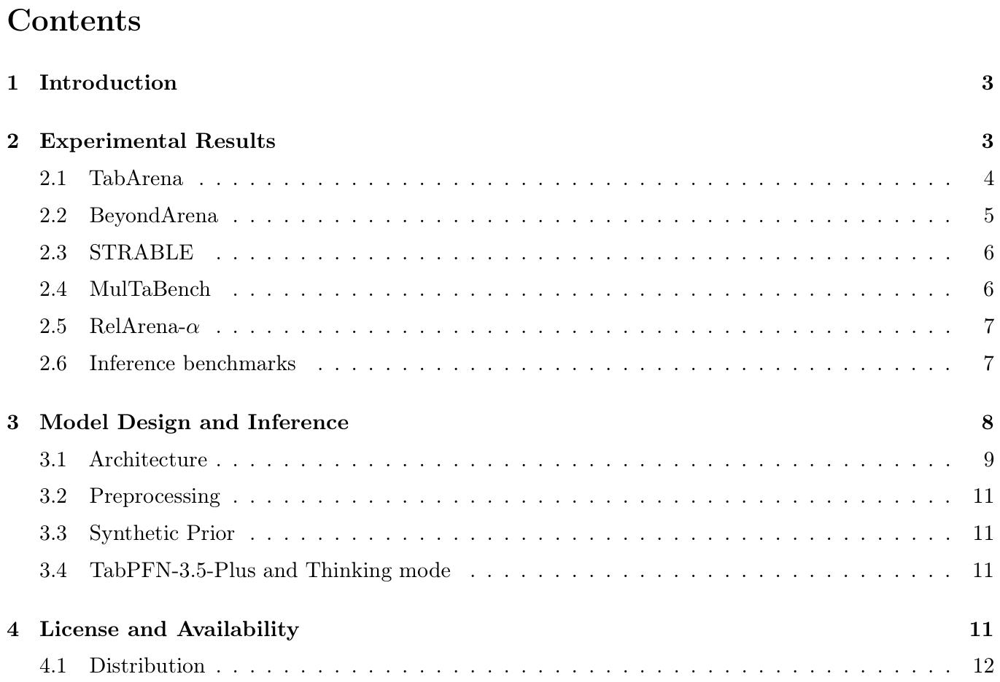
01 版本与问题：模型家族、容量和输入输出。
02 机制：缺失标记、标准化、ECDF、Fourier 编码、分组、共享主干与缓存。
03 主实验：TabArena、BeyondArena、字符串、多模态、关系表与速度。
目录：附录与研究迁移
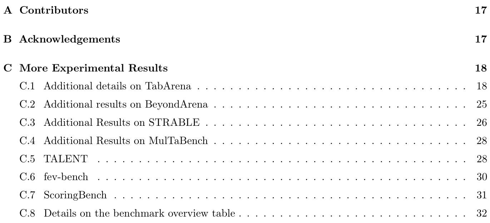
04 附录：Fig.9–22、Table 2–6 全部图表及子图，含完整榜单分块。
05 证据边界：指标口径、计时协议、组标识、缺失结果、原文不一致。
06 DMD 压缩拉曼：准确率优先、批次外测、掩膜选择和失败判据。末页只留结论。
版本与阅读范围
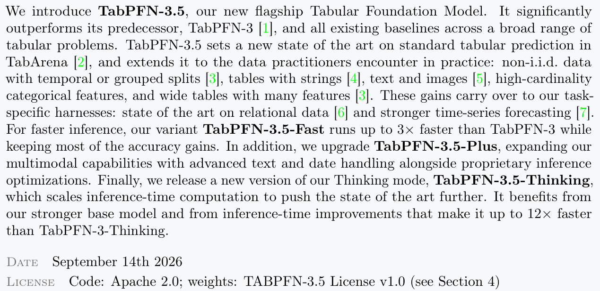
catalog 的 AL0010 对应 arXiv 2609.17895，不与 TabPFN-3 合并。当前锁定 v3，而非 2026-09-15 的 v1。
正文 1–4 节，附录 A/B 为贡献与致谢，C.1–C.8 为实验扩展。全文含 22 个编号图与 6 个编号表。
题首页仍印 September 14th 2026，这是报告日期。版本修订日期以 arXiv v3 为准。
版本与阅读范围：原文1/4
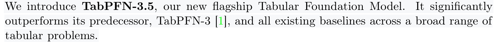
catalog 的 AL0010 对应 arXiv 2609.17895，不与 TabPFN-3 合并。当前锁定 v3，而非 2026-09-15 的 v1。
本页保留原句及其原始字形。行片仅为放大排版，文字、数字、公式和引用未改写。
这段原文的解释与研究边界保留在原教学页，当前补页用于清楚阅读证据。
版本与阅读范围：原文2/4
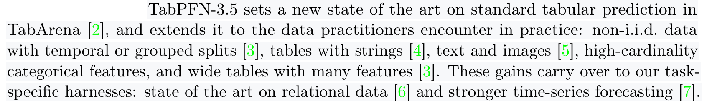
正文 1–4 节，附录 A/B 为贡献与致谢，C.1–C.8 为实验扩展。全文含 22 个编号图与 6 个编号表。
本页保留原句及其原始字形。行片仅为放大排版，文字、数字、公式和引用未改写。
这段原文的解释与研究边界保留在原教学页，当前补页用于清楚阅读证据。
版本与阅读范围：原文3/4
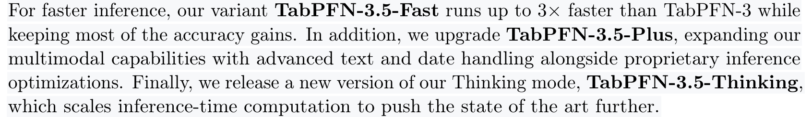
题首页仍印 September 14th 2026，这是报告日期。版本修订日期以 arXiv v3 为准。
本页保留原句及其原始字形。行片仅为放大排版，文字、数字、公式和引用未改写。
这段原文的解释与研究边界保留在原教学页，当前补页用于清楚阅读证据。
版本与阅读范围：原文4/4
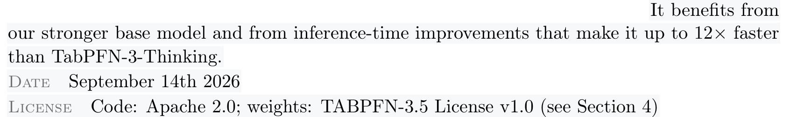
catalog 的 AL0010 对应 arXiv 2609.17895，不与 TabPFN-3 合并。当前锁定 v3，而非 2026-09-15 的 v1。
本页保留原句及其原始字形。行片仅为放大排版，文字、数字、公式和引用未改写。
这段原文的解释与研究边界保留在原教学页，当前补页用于清楚阅读证据。
模型面对的失效条件
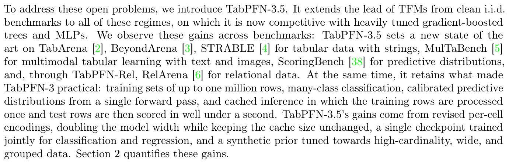
已有 TFM 的短板集中在分组或时间划分、大样本、宽表、文本和高基数类别。i.i.d. 随机切分的优势不能替代这些检查。
3.5 修改单元格编码并扩大模型，训练先验也更偏向宽表、高基数及跨组任务。
论文是作者技术报告。下面区分实测结果、作者解释和课件算例。
模型面对的失效条件：原文1/4
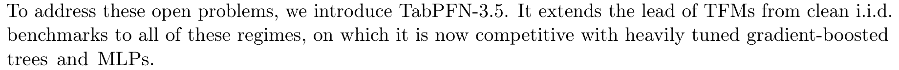
已有 TFM 的短板集中在分组或时间划分、大样本、宽表、文本和高基数类别。i.i.d. 随机切分的优势不能替代这些检查。
本页保留原句及其原始字形。行片仅为放大排版，文字、数字、公式和引用未改写。
这段原文的解释与研究边界保留在原教学页，当前补页用于清楚阅读证据。
模型面对的失效条件：原文2/4
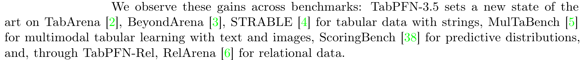
3.5 修改单元格编码并扩大模型，训练先验也更偏向宽表、高基数及跨组任务。
本页保留原句及其原始字形。行片仅为放大排版，文字、数字、公式和引用未改写。
这段原文的解释与研究边界保留在原教学页，当前补页用于清楚阅读证据。
模型面对的失效条件：原文3/4
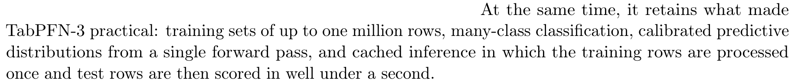
论文是作者技术报告。下面区分实测结果、作者解释和课件算例。
本页保留原句及其原始字形。行片仅为放大排版，文字、数字、公式和引用未改写。
这段原文的解释与研究边界保留在原教学页，当前补页用于清楚阅读证据。
模型面对的失效条件：原文4/4
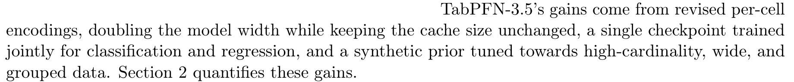
已有 TFM 的短板集中在分组或时间划分、大样本、宽表、文本和高基数类别。i.i.d. 随机切分的优势不能替代这些检查。
本页保留原句及其原始字形。行片仅为放大排版，文字、数字、公式和引用未改写。
这段原文的解释与研究边界保留在原教学页，当前补页用于清楚阅读证据。
版本容量不是精度保证
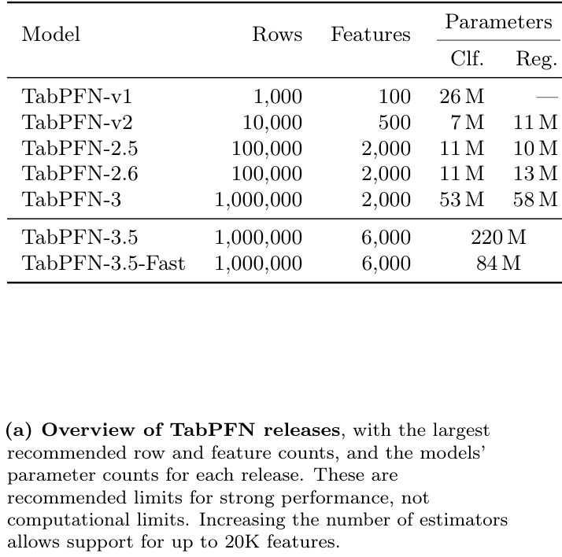
v1：1千行、100列、26M。v2：1万行、500列、分类7M/回归11M。2.5/2.6：10万行、2千列。
3：100万行、2千列、53M/58M。3.5：100万行、6千列、220M。Fast：同推荐形状、84M。
这些是推荐规模，不是硬计算上限。增加估计器可扩展到2万特征，但实际显存、延迟和精度需另测。
单数据集对照支持平均改善
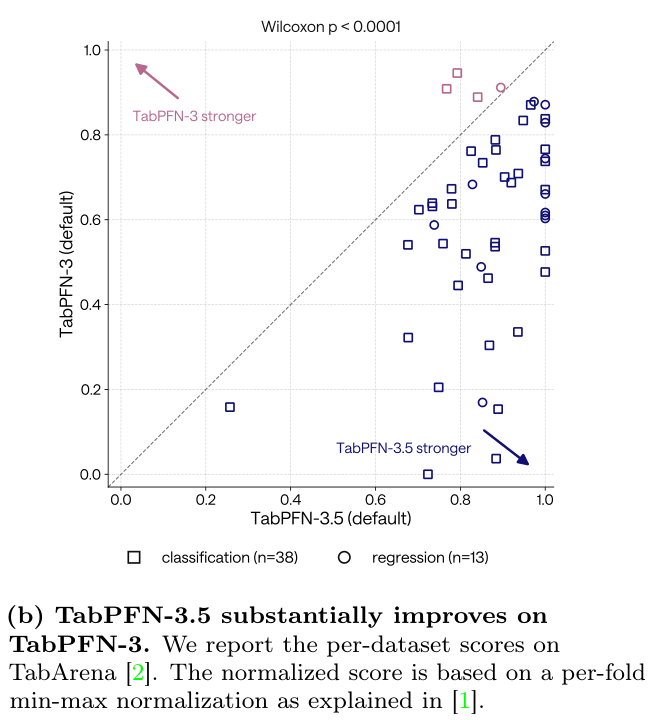
横轴为 3.5、纵轴为 3 的归一化得分，越大越好。对角线下方表示 3.5 更强。
38 个分类、13 个回归数据集。原图给 Wilcoxon 配对检验 p<0.0001。
归一化按每折 min–max 处理。显著性描述这批任务的配对差异，不表示每个未来数据集都提升。
表格任务的输入与输出
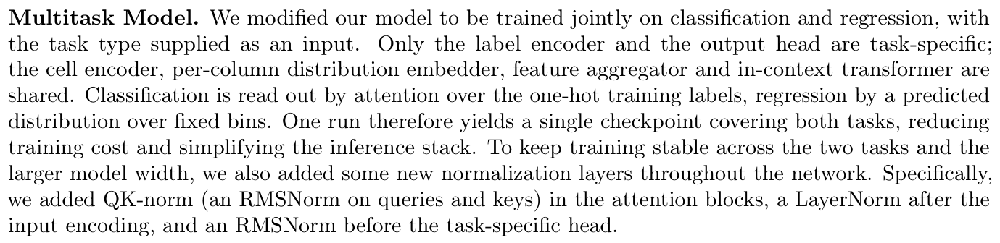
输入：训练表 Xtr∈ℝⁿˣᶜ、标签 ytr、待预测表 Xte，以及任务类型。类别列须用可接受的编码，缺失值单独标记。
计算：单元格编码后，经列分布表示、行特征聚合和上下文 Transformer。训练行作为预测上下文。
输出：分类给类别概率，回归给固定区间上的预测分布。主干权重在推理时复用。
表格任务的输入与输出：原文1/2

输入：训练表 Xtr∈ℝⁿˣᶜ、标签 ytr、待预测表 Xte，以及任务类型。类别列须用可接受的编码，缺失值单独标记。
本页保留原句及其原始字形。行片仅为放大排版，文字、数字、公式和引用未改写。
这段原文的解释与研究边界保留在原教学页，当前补页用于清楚阅读证据。
表格任务的输入与输出：原文2/2

计算：单元格编码后，经列分布表示、行特征聚合和上下文 Transformer。训练行作为预测上下文。
本页保留原句及其原始字形。行片仅为放大排版，文字、数字、公式和引用未改写。
这段原文的解释与研究边界保留在原教学页，当前补页用于清楚阅读证据。
单元格编码的三个阶段
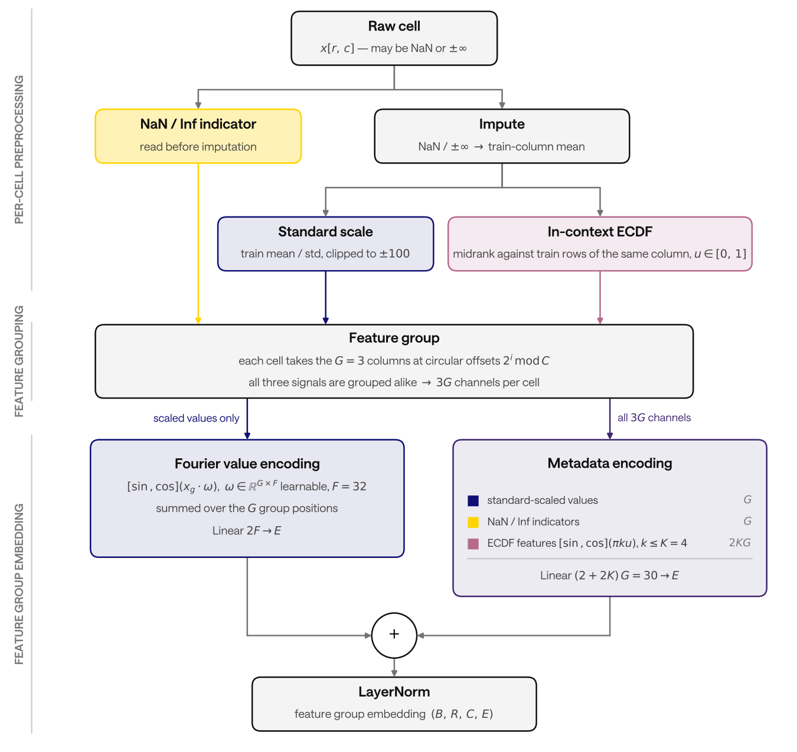
每个单元格保留三类信号：标准化值、NaN/Inf 标记、相对训练列的 ECDF 排名。
把 G=3 个列位置分组。数值 Fourier 分支和元数据分支相加，LayerNorm 后输出 E=128 维。
B、R、C 分别是批量、行和列数。输出张量形状为 (B,R,C,128)。
先记缺失，再插补与缩放
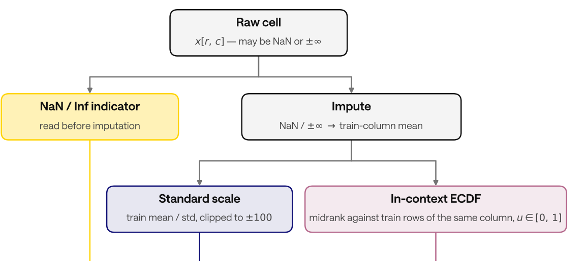
先读 NaN/±∞ 指示，再用训练列均值插补。这样“恰好等于均值”与“缺失后变为均值”仍可区分。
标准化只用训练均值 μc 与标准差 σc，之后截断到 ±100。测试列不能参与拟合统计量。
常数列、全缺失列的具体数值防护未在这张图说明，复现应核对实际代码，而不能自行当作已披露。
ECDF 描述列内相对位置
u∈[0,1] 是测试值相对该列训练值的中秩。它记录分布位置，补充标准化值保留的绝对幅度。
严格单调递增变换不改变中秩。所以一列和其对数的 ECDF 分支相同，但完整编码未必相同。
长尾数据被标准差缩得很近时，排名分支仍能分散相对位置。并列值共享排名，不能创造被量化丢失的细节。
四个训练值的编码算例
令训练列为 [1,2,2,5]，μ=2.5，采用总体标准差 σ=1.5。查询 x=2 的标准化值为 −1/3。
用 u=(小于x的数量+0.5×等于x的数量)/n 演示中秩，得到 u=(1+1)/4=0.5。论文仅说 midrank，代码归一化约定须另核。
若输入缺失，插补为2.5，z=0，但缺失指示保留。这个例子解释路径，不是模型输出预测。
按循环偏移组成三列
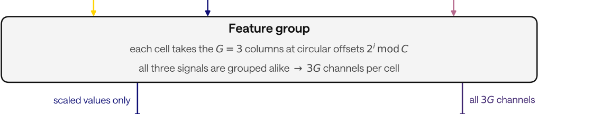
三种信号使用相同列分组。每个位置取 G=3 个列，循环偏移按 2ⁱ mod C。
示例取 i=0,1,2，则偏移为1、2、4。C=8、基准列0时，对应列1、2、4。该示例只展示索引规则。
分组前每列3类信号，分组后共3G=9通道。它不是把训练样本混成三个样本。
数值 Fourier 分支
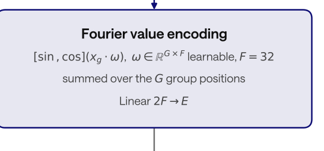
输入是分组后的 G=3 个标准化值。每个组位置有 F=32 个可学习频率，ω 形状为 G×F。
分别求 sin(xgωg) 与 cos(xgωg)，在 G 个位置上求和，得到2F=64维，再线性映射到128维。
频率学习使编码能区分小数值差异。对于序号编码类别，这不等于证明类别之间具有真实数值距离。
元数据分支的30维输入
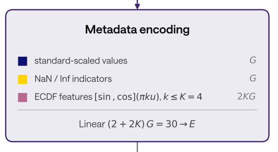
标准化值 G=3 维、缺失/无限标记 G=3 维。每个 ECDF 排名用 K=4 个低频谐波展开。
ECDF 部分有 2KG=24 维，因此输入总宽度为 (2+2K)G=30，再线性映射到E=128。
式中的 k=1…4，使用 sin(πku)、cos(πku)。绝对幅度和相对位置同时保留。
相加与归一化后的输出
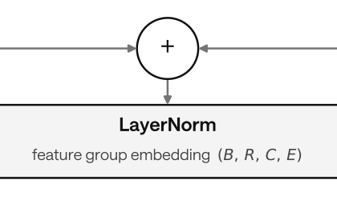
两个分支各输出128维，相加后做 LayerNorm。其输出送入后续表格主干。
单元格级128维不等于上下文 Transformer 的1024维。后者来自多 CLS 聚合后的行表示。
算例 u=0.5 时，第一谐波为 sin(π/2)=1、cos(π/2)=0。不同频率补充不同位置分辨率。
分类与回归共享主干
任务类型作为输入。单元格编码器、列分布表示、特征聚合器和上下文 Transformer 共享。
只有标签编码器与输出头随任务变化。分类通过对训练标签的注意力读出，回归预测固定分箱分布。
为共同训练及增宽稳定性，加入 QK 的 RMSNorm、输入编码后的 LayerNorm、任务头前 RMSNorm。
分类与回归共享主干：原文1/2

任务类型作为输入。单元格编码器、列分布表示、特征聚合器和上下文 Transformer 共享。
本页保留原句及其原始字形。行片仅为放大排版，文字、数字、公式和引用未改写。
这段原文的解释与研究边界保留在原教学页，当前补页用于清楚阅读证据。
分类与回归共享主干：原文2/2
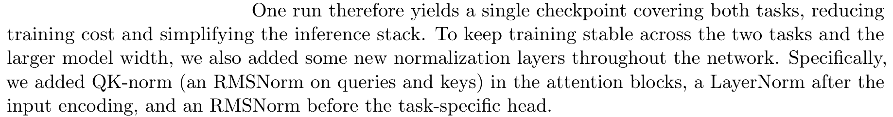
只有标签编码器与输出头随任务变化。分类通过对训练标签的注意力读出，回归预测固定分箱分布。
本页保留原句及其原始字形。行片仅为放大排版，文字、数字、公式和引用未改写。
这段原文的解释与研究边界保留在原教学页，当前补页用于清楚阅读证据。
分类概率的教学算例
用简化注意力读出说明：三个训练标签为[A,B,A]，某查询对它们的权重为[0.2,0.5,0.3]。
按标签聚合得到 p(A)=0.5、p(B)=0.5。这是便于理解的手算，不是3.5完整实现的复刻。
概率并列时无法支持可靠分类。拉曼低信噪比样本应单独检验校准和拒识，而不是把0.51当作充分证据。
分类概率的教学算例：原文1/2
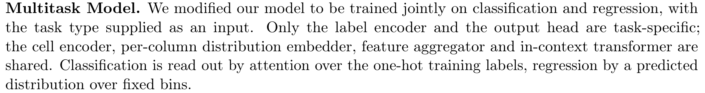
用简化注意力读出说明：三个训练标签为[A,B,A]，某查询对它们的权重为[0.2,0.5,0.3]。
本页保留原句及其原始字形。行片仅为放大排版，文字、数字、公式和引用未改写。
原文描述表格模型本身；前面的手算或DMD研究方案仍是教学推演，不是这段原文报告的实验。
分类概率的教学算例：原文2/2

按标签聚合得到 p(A)=0.5、p(B)=0.5。这是便于理解的手算，不是3.5完整实现的复刻。
本页保留原句及其原始字形。行片仅为放大排版，文字、数字、公式和引用未改写。
原文描述表格模型本身；前面的手算或DMD研究方案仍是教学推演，不是这段原文报告的实验。
回归输出是分布
假设三个回归区间的概率为 [0.2,0.5,0.3]，代表值为 [0,1,2]，则示例均值为1.1。
分位数应由累计分布读取，不把区间编号当作类别名。真正的分箱边界、尾部处理应以实现为准。
若目标是菌浓度，点误差与区间覆盖率需同时报告。本文的分布评估见 ScoringBench，未涉及菌浓度。
回归输出是分布：原文1/2

假设三个回归区间的概率为 [0.2,0.5,0.3]，代表值为 [0,1,2]，则示例均值为1.1。
本页保留原句及其原始字形。行片仅为放大排版，文字、数字、公式和引用未改写。
原文描述表格模型本身；前面的手算或DMD研究方案仍是教学推演，不是这段原文报告的实验。
回归输出是分布：原文2/2

分位数应由累计分布读取，不把区间编号当作类别名。真正的分箱边界、尾部处理应以实现为准。
本页保留原句及其原始字形。行片仅为放大排版，文字、数字、公式和引用未改写。
原文描述表格模型本身；前面的手算或DMD研究方案仍是教学推演，不是这段原文报告的实验。
增宽模型与缓存成本
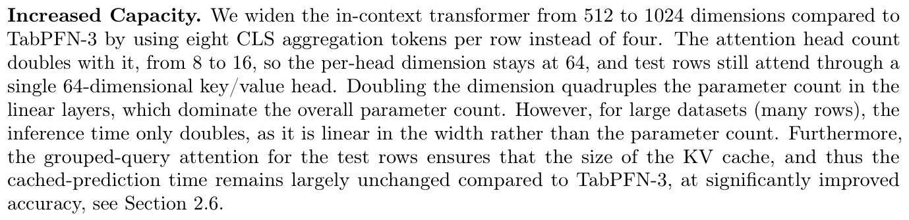
行内 CLS 聚合 token 从4个增到8个，上下文宽度512→1024，注意力头8→16，每头仍为64维。
线性层参数近似随宽度平方增长，因此220M参数约为3代的4倍。大行数计算主要随宽度增加，前向约增2倍。
测试行仍通过单个64维 key/value head 读缓存。参数增加并不必然让在线缓存访问同倍增长。
增宽模型与缓存成本：原文1/2
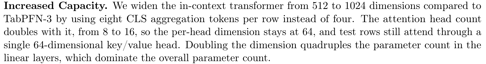
行内 CLS 聚合 token 从4个增到8个，上下文宽度512→1024，注意力头8→16，每头仍为64维。
本页保留原句及其原始字形。行片仅为放大排版，文字、数字、公式和引用未改写。
这段原文的解释与研究边界保留在原教学页，当前补页用于清楚阅读证据。
增宽模型与缓存成本：原文2/2
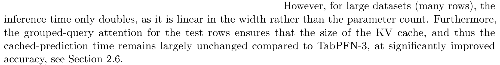
线性层参数近似随宽度平方增长，因此220M参数约为3代的4倍。大行数计算主要随宽度增加，前向约增2倍。
本页保留原句及其原始字形。行片仅为放大排版，文字、数字、公式和引用未改写。
这段原文的解释与研究边界保留在原教学页，当前补页用于清楚阅读证据。
更简单的外部预处理
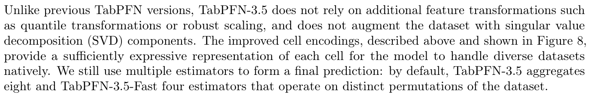
不再依赖额外分位数变换、robust scaling 或 SVD 特征扩增，表示能力更多交给单元格编码。
基础版默认8个估计器，Fast默认4个，每个使用不同数据排列，最后集成。
这不表示光谱仪的暗噪声、宇宙射线和基线校正可忽略。光学预处理和表格模型预处理属于不同层次。
更简单的外部预处理：原文1/2
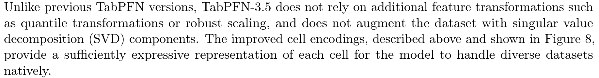
不再依赖额外分位数变换、robust scaling 或 SVD 特征扩增，表示能力更多交给单元格编码。
本页保留原句及其原始字形。行片仅为放大排版，文字、数字、公式和引用未改写。
这段原文的解释与研究边界保留在原教学页，当前补页用于清楚阅读证据。
更简单的外部预处理：原文2/2
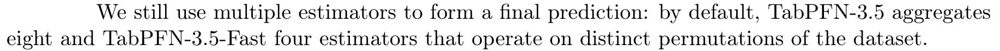
基础版默认8个估计器，Fast默认4个，每个使用不同数据排列，最后集成。
本页保留原句及其原始字形。行片仅为放大排版，文字、数字、公式和引用未改写。
这段原文的解释与研究边界保留在原教学页，当前补页用于清楚阅读证据。
先验改变的已知与未知
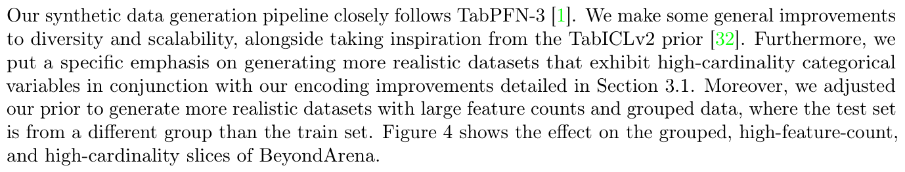
合成生成管线沿用3代，并借鉴 TabICLv2 的先验设计。新增强调高基数类别、较大特征数和跨组测试。
论文把 BeyondArena 对应切片改善与这些更改联系起来，但未给逐项消融来分开编码、模型容量与先验贡献。
因此可以复述联合改进的结果，不能给某一个模块编造独立提升百分比。
先验改变的已知与未知：原文1/2
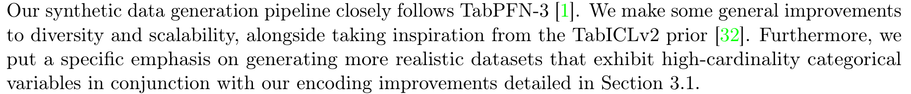
合成生成管线沿用3代，并借鉴 TabICLv2 的先验设计。新增强调高基数类别、较大特征数和跨组测试。
本页保留原句及其原始字形。行片仅为放大排版，文字、数字、公式和引用未改写。
这段原文的解释与研究边界保留在原教学页，当前补页用于清楚阅读证据。
先验改变的已知与未知：原文2/2
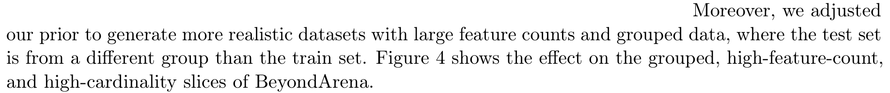
论文把 BeyondArena 对应切片改善与这些更改联系起来，但未给逐项消融来分开编码、模型容量与先验贡献。
本页保留原句及其原始字形。行片仅为放大排版，文字、数字、公式和引用未改写。
这段原文的解释与研究边界保留在原教学页，当前补页用于清楚阅读证据。
Plus 与 Thinking 的边界
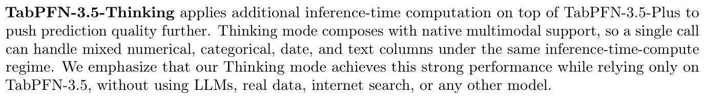
Plus 扩展文本、日期处理，并以 FP8 attention 优化大行数推理。图片仍走冻结图像嵌入路径。
Thinking 在 Plus 上增加推理计算。作者说它只使用3.5，不用 LLM、互联网搜索或其他模型。
具体实现保密。把它解释成“多轮思维链”或自行画出搜索算法，都会超出报告证据。
Plus 与 Thinking 的边界：原文1/1
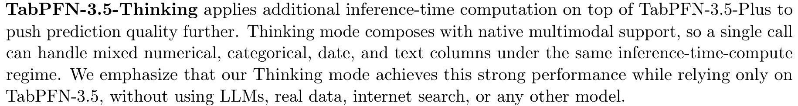
Plus 扩展文本、日期处理，并以 FP8 attention 优化大行数推理。图片仍走冻结图像嵌入路径。
本页保留原句及其原始字形。行片仅为放大排版，文字、数字、公式和引用未改写。
这段原文的解释与研究边界保留在原教学页，当前补页用于清楚阅读证据。
七个榜首来自不同成员
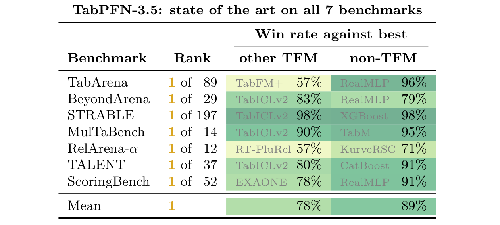
TabArena、BeyondArena、STRABLE、MulTaBench 用 Thinking。RelArena 用内部预览 harness。TALENT、ScoringBench 的摘要代表用基础版。
“七个第一”不意味着同一个公开 checkpoint 在全部设置第一。时间序列 fev-bench 未列入这七项。
表中分母排除其他3.5家族成员。胜率先在数据集内平均，再给数据集等权。含TFM的AutoGluon系统不列入这两类最强对手。
Table 1 的逐项比较
TabArena：对TabFM+ 57%，对RealMLP 96%。BeyondArena：对TabICLv2 83%，对RealMLP 79%。STRABLE：98%/98%。
MulTaBench：对TabICLv2 90%，对TabM 95%。RelArena：对RT-PluRel 57%，对KurveRSC 71%。
TALENT：80%/91%，前者对TabICLv2来自274集，后者对CatBoost来自337集。ScoringBench：78%/91%。七项均值78%/89%不是准确率。
Elo、胜率与可改进度
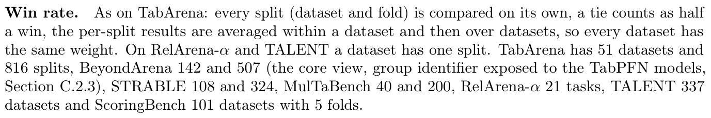
Elo 将多模型成对结果汇总为相对实力，分数依赖参评模型池。跨基准比较绝对Elo没有统一意义。
胜率是优于对手的比例，平局记半胜。它不说明单个样本分类准确率，也不表达每次胜出的误差幅度。
Improvability 表示切换到每数据集最佳模型还可改善多少，越低越好。近乎已解决的任务会放大微小残余误差。
Elo、胜率与可改进度：原文1/2
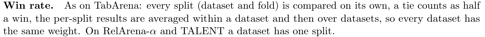
Elo 将多模型成对结果汇总为相对实力，分数依赖参评模型池。跨基准比较绝对Elo没有统一意义。
本页保留原句及其原始字形。行片仅为放大排版，文字、数字、公式和引用未改写。
这段原文的解释与研究边界保留在原教学页，当前补页用于清楚阅读证据。
Elo、胜率与可改进度：原文2/2
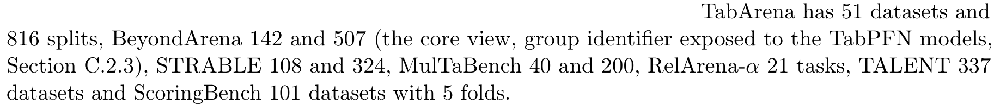
胜率是优于对手的比例，平局记半胜。它不说明单个样本分类准确率，也不表达每次胜出的误差幅度。
本页保留原句及其原始字形。行片仅为放大排版，文字、数字、公式和引用未改写。
这段原文的解释与研究边界保留在原教学页，当前补页用于清楚阅读证据。
TabArena 的精度与时间
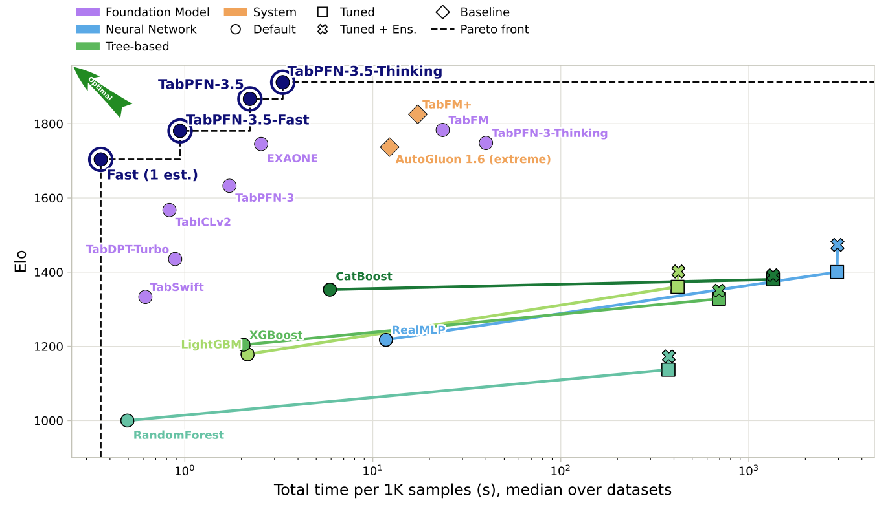
51 个数据集，分类38、回归13，共816个任务。横轴为每千训练行拟合时间加每千测试行预测时间，取数据集中位数。
纵轴Elo越高越好，横轴为对数尺度。Thinking、基础版、Fast 在报告中构成不同预算段的前沿。
图上“训练时间”不是重新预训练基础模型。附录的包袋与计时改动会影响模型间速度比例。
TabArena 的完整精度与时间图
BeyondArena 的142个数据集
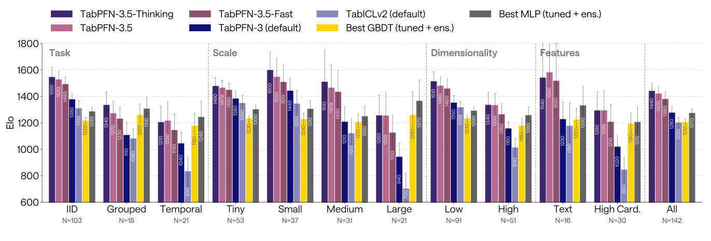
任务类型、规模、维度和特征类型是重叠切片，不能把各N相加为样本量。总体包含142数据集、507个划分。
图内数字四舍五入至10 Elo，误差线为bootstrap置信区间。小切片的精确排序可能不稳定。
包含大表时，调参集成MLP在分组、时间、大样本切片仍占优。3.5未全面消除这些差距。
BeyondArena：同分布

N=103。Thinking / 3.5 / Fast：1550 / 1530 / 1490 Elo。
3代 / TabICLv2：1380 / 1310。GBDT / MLP调参集成：1220 / 1290。基础版对3代差150。
比较同一切片中的分数；该切片与其他切片可能重叠。 所有数字为图示舍入值，误差线决定能否声称稳定排序。
BeyondArena：未见组

N=18。Thinking / 3.5 / Fast：1340 / 1270 / 1230 Elo。
3代 / TabICLv2：1110 / 1080。GBDT / MLP调参集成：1260 / 1310。基础版对3代差160。
MLP为1310，高于基础版1270。这是真实残余短板。 所有数字为图示舍入值，误差线决定能否声称稳定排序。
BeyondArena：未来时间
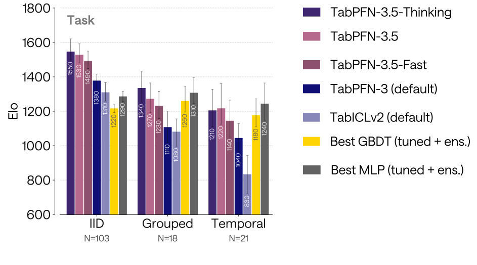
N=21。Thinking / 3.5 / Fast：1210 / 1220 / 1140 Elo。
3代 / TabICLv2：1040 / 830。GBDT / MLP调参集成：1180 / 1240。基础版对3代差180。
MLP为1240，高于基础版1220。这是真实残余短板。 所有数字为图示舍入值，误差线决定能否声称稳定排序。
BeyondArena：极小表
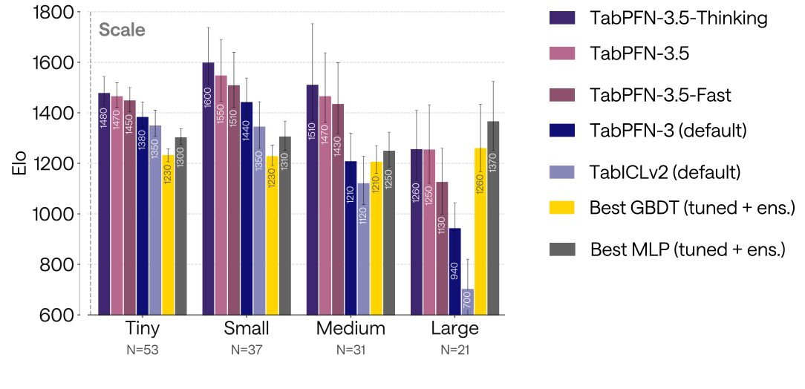
N=53。Thinking / 3.5 / Fast：1480 / 1470 / 1450 Elo。
3代 / TabICLv2：1380 / 1350。GBDT / MLP调参集成：1230 / 1300。基础版对3代差90。
比较同一切片中的分数；该切片与其他切片可能重叠。 所有数字为图示舍入值，误差线决定能否声称稳定排序。
BeyondArena：小表

N=37。Thinking / 3.5 / Fast：1600 / 1550 / 1510 Elo。
3代 / TabICLv2：1440 / 1350。GBDT / MLP调参集成：1230 / 1310。基础版对3代差110。
比较同一切片中的分数；该切片与其他切片可能重叠。 所有数字为图示舍入值，误差线决定能否声称稳定排序。
BeyondArena：中表

N=31。Thinking / 3.5 / Fast：1510 / 1470 / 1430 Elo。
3代 / TabICLv2：1210 / 1120。GBDT / MLP调参集成：1210 / 1250。基础版对3代差260。
比较同一切片中的分数；该切片与其他切片可能重叠。 所有数字为图示舍入值，误差线决定能否声称稳定排序。
BeyondArena：大表

N=21。Thinking / 3.5 / Fast：1260 / 1250 / 1130 Elo。
3代 / TabICLv2：940 / 700。GBDT / MLP调参集成：1260 / 1370。基础版对3代差310。
MLP为1370，高于基础版1250。这是真实残余短板。 所有数字为图示舍入值，误差线决定能否声称稳定排序。
BeyondArena：低维
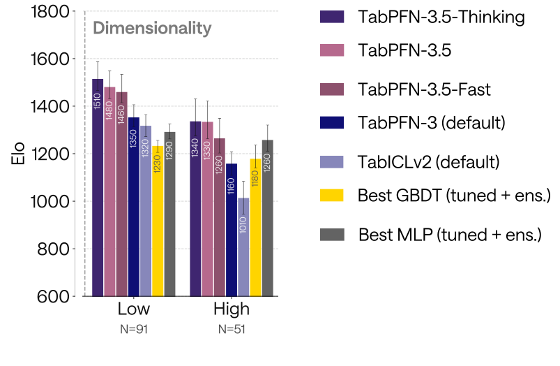
N=91。Thinking / 3.5 / Fast：1510 / 1480 / 1460 Elo。
3代 / TabICLv2：1350 / 1320。GBDT / MLP调参集成：1230 / 1290。基础版对3代差130。
比较同一切片中的分数；该切片与其他切片可能重叠。 所有数字为图示舍入值，误差线决定能否声称稳定排序。
BeyondArena：高维

N=51。Thinking / 3.5 / Fast：1340 / 1330 / 1260 Elo。
3代 / TabICLv2：1160 / 1010。GBDT / MLP调参集成：1180 / 1260。基础版对3代差170。
比较同一切片中的分数；该切片与其他切片可能重叠。 所有数字为图示舍入值，误差线决定能否声称稳定排序。
BeyondArena：文本列
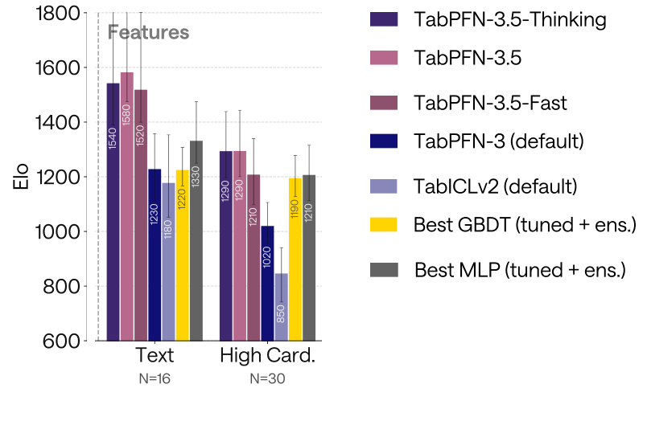
N=16。Thinking / 3.5 / Fast：1540 / 1580 / 1520 Elo。
3代 / TabICLv2：1230 / 1180。GBDT / MLP调参集成：1220 / 1330。基础版对3代差350。
比较同一切片中的分数；该切片与其他切片可能重叠。 所有数字为图示舍入值，误差线决定能否声称稳定排序。
BeyondArena：高基数

N=30。Thinking / 3.5 / Fast：1290 / 1290 / 1210 Elo。
3代 / TabICLv2：1020 / 850。GBDT / MLP调参集成：1190 / 1210。基础版对3代差270。
比较同一切片中的分数；该切片与其他切片可能重叠。 所有数字为图示舍入值，误差线决定能否声称稳定排序。
BeyondArena：总体
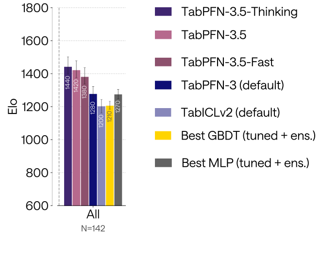
N=142。Thinking / 3.5 / Fast：1440 / 1420 / 1380 Elo。
3代 / TabICLv2：1280 / 1200。GBDT / MLP调参集成：1210 / 1270。基础版对3代差140。
比较同一切片中的分数；该切片与其他切片可能重叠。 所有数字为图示舍入值，误差线决定能否声称稳定排序。
非大表切片缩小了差距
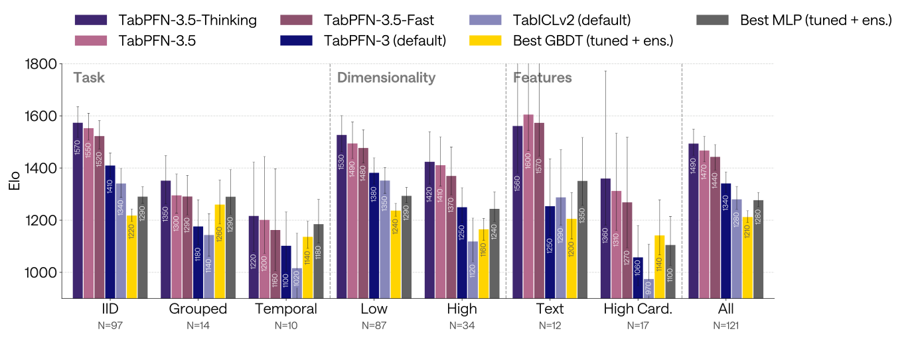
移除大表后剩121数据集。图中未见组N=14、时间N=10，小于完整基准的18和21。
基础版总体1470，Thinking1490，Fast1440。基础版对3代1340的差距为130 Elo。
时间划分与规模混杂，不能把完整基准和子集的差值全归因于模型是否懂时间。
非大表：同分布
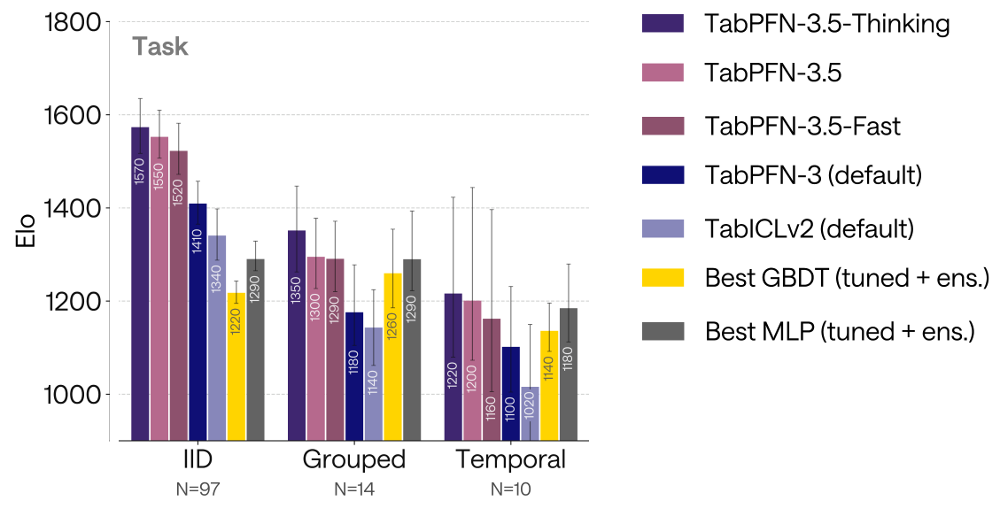
N=97。Thinking / 3.5 / Fast：1570 / 1550 / 1520。
3代 / TabICLv2：1410 / 1340。GBDT / MLP：1220 / 1290 Elo。
组任务使用组标识作为输入，详见C.2.3。这不是原始BeyondArena预处理完全不变的比较。分数均按图示舍入。
非大表：未见组

N=14。Thinking / 3.5 / Fast：1350 / 1300 / 1290。
3代 / TabICLv2：1180 / 1140。GBDT / MLP：1260 / 1290 Elo。
组任务使用组标识作为输入，详见C.2.3。这不是原始BeyondArena预处理完全不变的比较。分数均按图示舍入。
非大表：未来时间

N=10。Thinking / 3.5 / Fast：1220 / 1200 / 1160。
3代 / TabICLv2：1100 / 1020。GBDT / MLP：1140 / 1180 Elo。
组任务使用组标识作为输入，详见C.2.3。这不是原始BeyondArena预处理完全不变的比较。分数均按图示舍入。
非大表：低维

N=87。Thinking / 3.5 / Fast：1530 / 1490 / 1480。
3代 / TabICLv2：1380 / 1350。GBDT / MLP：1240 / 1290 Elo。
组任务使用组标识作为输入，详见C.2.3。这不是原始BeyondArena预处理完全不变的比较。分数均按图示舍入。
非大表：高维
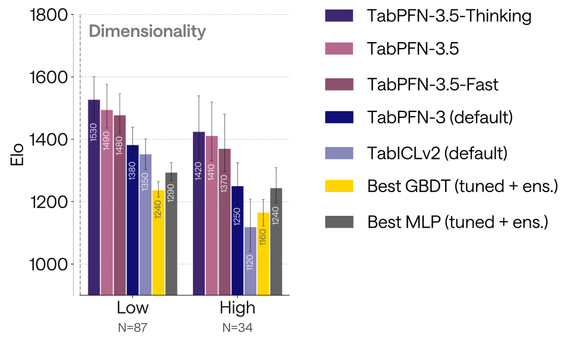
N=34。Thinking / 3.5 / Fast：1420 / 1410 / 1370。
3代 / TabICLv2：1250 / 1120。GBDT / MLP：1160 / 1240 Elo。
组任务使用组标识作为输入，详见C.2.3。这不是原始BeyondArena预处理完全不变的比较。分数均按图示舍入。
非大表：文本列

N=12。Thinking / 3.5 / Fast：1560 / 1600 / 1570。
3代 / TabICLv2：1250 / 1290。GBDT / MLP：1200 / 1350 Elo。
组任务使用组标识作为输入，详见C.2.3。这不是原始BeyondArena预处理完全不变的比较。分数均按图示舍入。
非大表：高基数
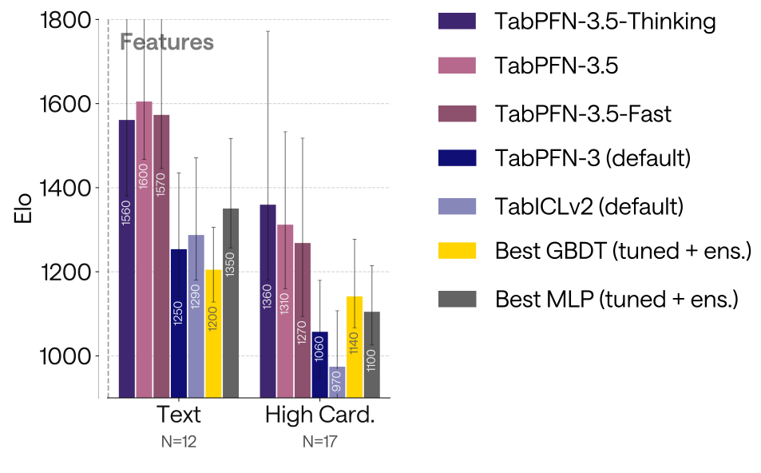
N=17。Thinking / 3.5 / Fast：1360 / 1310 / 1270。
3代 / TabICLv2：1060 / 970。GBDT / MLP：1140 / 1100 Elo。
组任务使用组标识作为输入，详见C.2.3。这不是原始BeyondArena预处理完全不变的比较。分数均按图示舍入。
非大表：总体
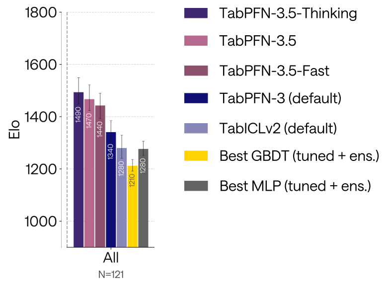
N=121。Thinking / 3.5 / Fast：1490 / 1470 / 1440。
3代 / TabICLv2：1340 / 1280。GBDT / MLP：1210 / 1280 Elo。
组任务使用组标识作为输入，详见C.2.3。这不是原始BeyondArena预处理完全不变的比较。分数均按图示舍入。
STRABLE 的字符串协议
108数据集、每集3折。使用原基准已经发布的结果，没有把所有基线重新跑一遍。
基础版与Fast采用TF-IDF。Plus、Thinking及其他原生文本模型接收原始表。
比较覆盖原基准发表时的模型池，未覆盖之后所有新模型。短字符串与长文档不能直接等同。
STRABLE 的字符串协议：原文1/2
108数据集、每集3折。使用原基准已经发布的结果，没有把所有基线重新跑一遍。
本页保留原句及其原始字形。行片仅为放大排版，文字、数字、公式和引用未改写。
这段原文的解释与研究边界保留在原教学页，当前补页用于清楚阅读证据。
STRABLE 的字符串协议：原文2/2
基础版与Fast采用TF-IDF。Plus、Thinking及其他原生文本模型接收原始表。
本页保留原句及其原始字形。行片仅为放大排版，文字、数字、公式和引用未改写。
这段原文的解释与研究边界保留在原教学页，当前补页用于清楚阅读证据。
字符串结果逐项读图
Thinking1973，Plus1893，基础版TF-IDF1714，Fast1594。TabPFN-2.5为1499、TabICLv2为1383。
RealMLP1330、XGBoost调参1336、ConTextTab1324、CatBoost调参1120。基础版领先TabICLv2约331 Elo。
这里的比较同时涉及表格模型、字符串表示和原生处理路径。不能据此单独归因于某个编码模块。
多模态的输入转换
40数据集：20含图像列，20含自由文本列，每集5折。普通模型使用冻结e5-small-v2文本与DINOv3-small图像嵌入。
嵌入再经PCA降到30维。基础版与Fast沿用同一预处理，方便比较。
Plus与Thinking原生处理文本，但图像仍使用冻结嵌入。不能把它们描述成直接处理像素的视觉模型。
多模态的输入转换：原文1/2
40数据集：20含图像列，20含自由文本列，每集5折。普通模型使用冻结e5-small-v2文本与DINOv3-small图像嵌入。
本页保留原句及其原始字形。行片仅为放大排版，文字、数字、公式和引用未改写。
这段原文的解释与研究边界保留在原教学页，当前补页用于清楚阅读证据。
多模态的输入转换：原文2/2
嵌入再经PCA降到30维。基础版与Fast沿用同一预处理，方便比较。
本页保留原句及其原始字形。行片仅为放大排版，文字、数字、公式和引用未改写。
这段原文的解释与研究边界保留在原教学页，当前补页用于清楚阅读证据。
多模态总体结果
Thinking1956，Plus1927，基础版1856，Fast1766。TabICLv2为1637，TabPFN-2.5为1623。
AutoGluon-MM1494，TabM1455，TabSTAR1375，TabDPT1345，ConTextTab1336。
最弱端Random Forest1000，XGBoost1021，LightGBM1178。结果限定于40数据集及原基准发表的对手。
关系任务依赖独立harness
21个RelArena-α任务。已发布TabPFN-Rel(3.5-Plus)为1880，RT-PluRel1844，原API版本1793。
内部Preview为1916，比已发布3.5-Plus再高36。KurveRSC1766、OSS1713、GraphSAGE1654。
斜线柱代表system，遵守数据状态和评估方式，但不遵守标准调参制度。Preview不等于当前公开可复现结果。
关系表对照的剩余模型
RelGT1558，RDBLearn1531，RelGNN1503。每实体常数预测1228，全局常数1000。
3.5-Plus替换底座约增加87 Elo（1880−1793），作者概括为近90。新harness与底座共同开发。
公开checkpoint与Thinking在此harness的结果仍在进行中，不能拿Preview成绩承诺本地基础版。
速度实验的测量对象
硬件为单张RTX PRO 6000 Blackwell 96GB。100列、1024测试行，训练行数1千至100万。
跑单个估计器前向，再乘默认数：3和3.5为8，Fast为4。它不是含所有数据准备的端到端部署时延。
虚线是Plus优化路径。右侧缓存预测另测1或100测试行，不与左侧完整前向混为一谈。
绝对前向时间
双对数坐标。训练行增加时，基础版曲线高于3代，Fast更低。
超过128k行后这些模型随训练行数呈二次扩展。百万行可支持不代表成本很低。
正文给基础版最慢可约为3代2倍。曲线上未标精确秒数，不从图片杜撰小数。
相对速度
以3代为1。基础版最高约2倍延迟，Plus优化后约1.25倍。
Fast最多约快3倍，其优化Plus路径可约为3代耗时的1/4。
“最多”来自特定规模和硬件，不是所有机器、行列数都固定加速。
缓存预测
右图横轴是构建缓存的训练行数，纵轴为缓存后预测秒数。点线/实线分别标1与100个测试行。
单测试行时3.5与3的缓存预测时间近乎重合。Fast约快3倍。
训练上下文变化就要更新相应缓存，不能把重建成本遗漏在在线吞吐报告之外。
缓存具体保存什么
列分布embedder各块的inducing states、上下文自注意力的keys/values，以及多类别解码器输入。
3.5直接缓存多类别decoder的输入keys，减少缓存及计算。ECDF使用bucketed表示，使其缓存不随训练行数无限增大。
缓存总量与3代大致相当是论文结果。不同列数、精度、估计器数会改变用户实际显存占用。
缓存具体保存什么：原文1/2
列分布embedder各块的inducing states、上下文自注意力的keys/values，以及多类别解码器输入。
本页保留原句及其原始字形。行片仅为放大排版，文字、数字、公式和引用未改写。
这段原文的解释与研究边界保留在原教学页，当前补页用于清楚阅读证据。
缓存具体保存什么：原文2/2
3.5直接缓存多类别decoder的输入keys，减少缓存及计算。ECDF使用bucketed表示，使其缓存不随训练行数无限增大。
本页保留原句及其原始字形。行片仅为放大排版，文字、数字、公式和引用未改写。
这段原文的解释与研究边界保留在原教学页，当前补页用于清楚阅读证据。
调参轨迹与可改进度
51数据集、816任务。横轴是每千行总时间的中位数，纵轴improvability越低越好。
一条线连接传统模型随机配置数量增加后的调参与集成轨迹。单点包括默认模型和3.5家族。
Elo最优与improvability最优未必相同。前者看成对胜负，后者还敏感于残余误差的量级。
完整胜率矩阵的读法
行是获胜方，列是对手。示例：Thinking对基础版68%，反向32%。对角线不构成独立对照。
基础版对TabFM为51%，对TabFM+为45%。可见总体Elo较高不要求对每个模型成对胜率都超过50%。
原图标为816任务的成对胜率；Table 1摘要强调数据集等权。不同汇总口径不应悄悄混用。
中等规模的调参轨迹
15数据集、135任务，训练行12,772至100,000，中位数30,487。
相同图式换成medium子集：较低improvability和较短时间更好。
这些不是独立新增数据集，而是TabArena的一部分。不能与全体51集再拼接成66集。
中等规模的成对优势
Thinking对基础版82%，对Fast96%。基础版对Fast90%，对TabFM75%。
基础版对3代99%，对TabICLv2为98%。该子集优势明显强于small子集的一些比较。
矩阵含19个显示方法。下一组放大页保留所有矩阵数字，避免只挑有利对手。
胜率矩阵：第1–7行
行顺序：Thinking、3.5、TabFM+、TabFM默认、AutoGluon非商用4h、Fast、3-Thinking。
列顺序与完整图一致。数值为百分比，读作“这一行的方法战胜该列方法的比例”。
本页为原图列名与连续行的截图拼接。所有19列保留，无重新计算。颜色从紫色低胜率到绿色高胜率。
胜率矩阵：第8–14行
行顺序：EXAONE默认、AutoGluon extreme4h、Fast单估计器、3默认、TabICLv2默认、2.6默认、RealMLP T+E。
列顺序与完整图一致。数值为百分比，读作“这一行的方法战胜该列方法的比例”。
本页为原图列名与连续行的截图拼接。所有19列保留，无重新计算。颜色从紫色低胜率到绿色高胜率。
胜率矩阵：第15–19行
行顺序：TabDPT-Turbo、LightGBM T+E、CatBoost T+E、TabSwift、XGBoost T+E。
列顺序与完整图一致。数值为百分比，读作“这一行的方法战胜该列方法的比例”。
本页为原图列名与连续行的截图拼接。所有19列保留，无重新计算。颜色从紫色低胜率到绿色高胜率。
TabArena胜率：行1–5 × 列1–5
TabArena胜率：行1–5 × 列6–10
TabArena胜率：行1–5 × 列11–15
TabArena胜率：行1–5 × 列16–19
TabArena胜率：行6–10 × 列1–5
TabArena胜率：行6–10 × 列6–10
TabArena胜率：行6–10 × 列11–15
TabArena胜率：行6–10 × 列16–19
TabArena胜率：行11–15 × 列1–5
TabArena胜率：行11–15 × 列6–10
TabArena胜率：行11–15 × 列11–15
TabArena胜率：行11–15 × 列16–19
TabArena胜率：行16–19 × 列1–5
TabArena胜率：行16–19 × 列6–10
TabArena胜率：行16–19 × 列11–15
TabArena胜率：行16–19 × 列16–19
胜率矩阵：第1–7行
行顺序：Thinking、3.5、Fast、AutoGluon非商用4h、TabFM+、3-Thinking、TabFM默认。
列顺序与完整图一致。数值为百分比，读作“这一行的方法战胜该列方法的比例”。
本页为原图列名与连续行的截图拼接。所有19列保留，无重新计算。颜色从紫色低胜率到绿色高胜率。
胜率矩阵：第8–14行
行顺序：AutoGluon extreme4h、EXAONE默认、Fast单估计器、3默认、TabICLv2默认、2.6默认、CatBoost T+E。
列顺序与完整图一致。数值为百分比，读作“这一行的方法战胜该列方法的比例”。
本页为原图列名与连续行的截图拼接。所有19列保留，无重新计算。颜色从紫色低胜率到绿色高胜率。
胜率矩阵：第15–19行
行顺序：RealMLP T+E、LightGBM T+E、TabDPT-Turbo、XGBoost T+E、TabSwift。
列顺序与完整图一致。数值为百分比，读作“这一行的方法战胜该列方法的比例”。
本页为原图列名与连续行的截图拼接。所有19列保留，无重新计算。颜色从紫色低胜率到绿色高胜率。
TabArena-medium胜率：行1–5 × 列1–5
TabArena-medium胜率：行1–5 × 列6–10
TabArena-medium胜率：行1–5 × 列11–15
TabArena-medium胜率：行1–5 × 列16–19
TabArena-medium胜率：行6–10 × 列1–5
TabArena-medium胜率：行6–10 × 列6–10
TabArena-medium胜率：行6–10 × 列11–15
TabArena-medium胜率：行6–10 × 列16–19
TabArena-medium胜率：行11–15 × 列1–5
TabArena-medium胜率：行11–15 × 列6–10
TabArena-medium胜率：行11–15 × 列11–15
TabArena-medium胜率：行11–15 × 列16–19
TabArena-medium胜率：行16–19 × 列1–5
TabArena-medium胜率：行16–19 × 列6–10
TabArena-medium胜率：行16–19 × 列11–15
TabArena-medium胜率：行16–19 × 列16–19
TabArena榜单：全体51集、816任务
Thinking1910，基础版1866，TabFM+1823。基础版improvability7.0%，TabFM+5.8%。
Fast1780与TabFM默认1780相同Elo，但两者拟合/预测中位数分别0.78/0.16与17.11/7.00秒每千行。
Elo越高越好，可改进度越低越好。上下标是Elo不确定范围。#wins保留原表口径，不将小数误读为整数任务数。
Table 2 总览：前8行完整上下文
Thinking1910，基础版1866，TabFM+1823。基础版improvability7.0%，TabFM+5.8%。
Fast1780与TabFM默认1780相同Elo，但两者拟合/预测中位数分别0.78/0.16与17.11/7.00秒每千行。
旧总览下缘涉及第8行。本补图保留完整第1–8行与六列列头，不含第9行残片；完整27行仍在后续分段页。
完整榜单：第1–6行
截图完整保留本段模型、Elo区间、#wins、可改进度、拟合时间、预测时间。D为默认，T为调参，T+E为调参与集成。
时间单位均为秒/千行，是各数据集的中位数。分列中位数之和未必等于总时间中位数。
比较本段与同表其他段时保持指标方向一致。原表头与连续行重复拼接，未重绘、删除或改写单元格。
完整榜单：第7–12行
截图完整保留本段模型、Elo区间、#wins、可改进度、拟合时间、预测时间。D为默认，T为调参，T+E为调参与集成。
时间单位均为秒/千行，是各数据集的中位数。分列中位数之和未必等于总时间中位数。
比较本段与同表其他段时保持指标方向一致。原表头与连续行重复拼接，未重绘、删除或改写单元格。
完整榜单：第13–18行
截图完整保留本段模型、Elo区间、#wins、可改进度、拟合时间、预测时间。D为默认，T为调参，T+E为调参与集成。
时间单位均为秒/千行，是各数据集的中位数。分列中位数之和未必等于总时间中位数。
比较本段与同表其他段时保持指标方向一致。原表头与连续行重复拼接，未重绘、删除或改写单元格。
完整榜单：第19–24行
截图完整保留本段模型、Elo区间、#wins、可改进度、拟合时间、预测时间。D为默认，T为调参，T+E为调参与集成。
时间单位均为秒/千行，是各数据集的中位数。分列中位数之和未必等于总时间中位数。
比较本段与同表其他段时保持指标方向一致。原表头与连续行重复拼接，未重绘、删除或改写单元格。
完整榜单：第25–27行
截图完整保留本段模型、Elo区间、#wins、可改进度、拟合时间、预测时间。D为默认，T为调参，T+E为调参与集成。
时间单位均为秒/千行，是各数据集的中位数。分列中位数之和未必等于总时间中位数。
比较本段与同表其他段时保持指标方向一致。原表头与连续行重复拼接，未重绘、删除或改写单元格。
TabArena榜单：small 36集、681任务
Thinking1824，TabFM+1806，基础版1796。small是基础版未排第二的视图。
基础版improvability9.0%，TabFM+6.0%。选择指标会改变判断，不宜只看Elo。
Elo越高越好，可改进度越低越好。上下标是Elo不确定范围。#wins保留原表口径，不将小数误读为整数任务数。
Table 3 总览：前8行完整上下文
Thinking1824，TabFM+1806，基础版1796。small是基础版未排第二的视图。
基础版improvability9.0%，TabFM+6.0%。选择指标会改变判断，不宜只看Elo。
旧总览下缘涉及第8行。本补图保留完整第1–8行与六列列头，不含第9行残片；完整27行仍在后续分段页。
完整榜单：第1–6行
截图完整保留本段模型、Elo区间、#wins、可改进度、拟合时间、预测时间。D为默认，T为调参，T+E为调参与集成。
时间单位均为秒/千行，是各数据集的中位数。分列中位数之和未必等于总时间中位数。
比较本段与同表其他段时保持指标方向一致。原表头与连续行重复拼接，未重绘、删除或改写单元格。
完整榜单：第7–12行
截图完整保留本段模型、Elo区间、#wins、可改进度、拟合时间、预测时间。D为默认，T为调参，T+E为调参与集成。
时间单位均为秒/千行，是各数据集的中位数。分列中位数之和未必等于总时间中位数。
比较本段与同表其他段时保持指标方向一致。原表头与连续行重复拼接，未重绘、删除或改写单元格。
完整榜单：第13–18行
截图完整保留本段模型、Elo区间、#wins、可改进度、拟合时间、预测时间。D为默认，T为调参，T+E为调参与集成。
时间单位均为秒/千行，是各数据集的中位数。分列中位数之和未必等于总时间中位数。
比较本段与同表其他段时保持指标方向一致。原表头与连续行重复拼接，未重绘、删除或改写单元格。
完整榜单：第19–24行
截图完整保留本段模型、Elo区间、#wins、可改进度、拟合时间、预测时间。D为默认，T为调参，T+E为调参与集成。
时间单位均为秒/千行，是各数据集的中位数。分列中位数之和未必等于总时间中位数。
比较本段与同表其他段时保持指标方向一致。原表头与连续行重复拼接，未重绘、删除或改写单元格。
完整榜单：第25–27行
截图完整保留本段模型、Elo区间、#wins、可改进度、拟合时间、预测时间。D为默认，T为调参，T+E为调参与集成。
时间单位均为秒/千行，是各数据集的中位数。分列中位数之和未必等于总时间中位数。
比较本段与同表其他段时保持指标方向一致。原表头与连续行重复拼接，未重绘、删除或改写单元格。
TabArena榜单：medium 15集、135任务
Thinking2494，基础版2293，Fast2117。该子集前3均为3.5家族。
Thinking可改进度0.9%，基础版2.1%。不同子集Elo池的绝对分数不能直接横比。
Elo越高越好，可改进度越低越好。上下标是Elo不确定范围。#wins保留原表口径，不将小数误读为整数任务数。
Table 4 总览：前8行完整上下文
Thinking2494，基础版2293，Fast2117。该子集前3均为3.5家族。
Thinking可改进度0.9%，基础版2.1%。不同子集Elo池的绝对分数不能直接横比。
旧总览下缘涉及第8行。本补图保留完整第1–8行与六列列头，不含第9行残片；完整27行仍在后续分段页。
完整榜单：第1–6行
截图完整保留本段模型、Elo区间、#wins、可改进度、拟合时间、预测时间。D为默认，T为调参，T+E为调参与集成。
时间单位均为秒/千行，是各数据集的中位数。分列中位数之和未必等于总时间中位数。
比较本段与同表其他段时保持指标方向一致。原表头与连续行重复拼接，未重绘、删除或改写单元格。
完整榜单：第7–12行
截图完整保留本段模型、Elo区间、#wins、可改进度、拟合时间、预测时间。D为默认，T为调参，T+E为调参与集成。
时间单位均为秒/千行，是各数据集的中位数。分列中位数之和未必等于总时间中位数。
比较本段与同表其他段时保持指标方向一致。原表头与连续行重复拼接，未重绘、删除或改写单元格。
完整榜单：第13–18行
截图完整保留本段模型、Elo区间、#wins、可改进度、拟合时间、预测时间。D为默认，T为调参，T+E为调参与集成。
时间单位均为秒/千行，是各数据集的中位数。分列中位数之和未必等于总时间中位数。
比较本段与同表其他段时保持指标方向一致。原表头与连续行重复拼接，未重绘、删除或改写单元格。
完整榜单：第19–24行
截图完整保留本段模型、Elo区间、#wins、可改进度、拟合时间、预测时间。D为默认，T为调参，T+E为调参与集成。
时间单位均为秒/千行，是各数据集的中位数。分列中位数之和未必等于总时间中位数。
比较本段与同表其他段时保持指标方向一致。原表头与连续行重复拼接，未重绘、删除或改写单元格。
完整榜单：第25–27行
截图完整保留本段模型、Elo区间、#wins、可改进度、拟合时间、预测时间。D为默认，T为调参，T+E为调参与集成。
时间单位均为秒/千行，是各数据集的中位数。分列中位数之和未必等于总时间中位数。
比较本段与同表其他段时保持指标方向一致。原表头与连续行重复拼接，未重绘、删除或改写单元格。
TabArena榜单：分类38集、594任务
Thinking1872，基础版1845，TabFM+1803，Fast1784。
分类任务仍包含不同指标与数据分布，汇总Elo不是“1872%的准确率”。
Elo越高越好，可改进度越低越好。上下标是Elo不确定范围。#wins保留原表口径，不将小数误读为整数任务数。
Table 5 总览：前8行完整上下文
Thinking1872，基础版1845，TabFM+1803，Fast1784。
分类任务仍包含不同指标与数据分布，汇总Elo不是“1872%的准确率”。
旧总览下缘涉及第8行。本补图保留完整第1–8行与六列列头，不含第9行残片；完整27行仍在后续分段页。
完整榜单：第1–6行
截图完整保留本段模型、Elo区间、#wins、可改进度、拟合时间、预测时间。D为默认，T为调参，T+E为调参与集成。
时间单位均为秒/千行，是各数据集的中位数。分列中位数之和未必等于总时间中位数。
比较本段与同表其他段时保持指标方向一致。原表头与连续行重复拼接，未重绘、删除或改写单元格。
完整榜单：第7–12行
截图完整保留本段模型、Elo区间、#wins、可改进度、拟合时间、预测时间。D为默认，T为调参，T+E为调参与集成。
时间单位均为秒/千行，是各数据集的中位数。分列中位数之和未必等于总时间中位数。
比较本段与同表其他段时保持指标方向一致。原表头与连续行重复拼接，未重绘、删除或改写单元格。
完整榜单：第13–18行
截图完整保留本段模型、Elo区间、#wins、可改进度、拟合时间、预测时间。D为默认，T为调参，T+E为调参与集成。
时间单位均为秒/千行，是各数据集的中位数。分列中位数之和未必等于总时间中位数。
比较本段与同表其他段时保持指标方向一致。原表头与连续行重复拼接，未重绘、删除或改写单元格。
完整榜单：第19–24行
截图完整保留本段模型、Elo区间、#wins、可改进度、拟合时间、预测时间。D为默认，T为调参，T+E为调参与集成。
时间单位均为秒/千行，是各数据集的中位数。分列中位数之和未必等于总时间中位数。
比较本段与同表其他段时保持指标方向一致。原表头与连续行重复拼接，未重绘、删除或改写单元格。
完整榜单：第25–27行
截图完整保留本段模型、Elo区间、#wins、可改进度、拟合时间、预测时间。D为默认，T为调参，T+E为调参与集成。
时间单位均为秒/千行，是各数据集的中位数。分列中位数之和未必等于总时间中位数。
比较本段与同表其他段时保持指标方向一致。原表头与连续行重复拼接，未重绘、删除或改写单元格。
TabArena榜单：回归13集、222任务
Thinking2250，基础版2103，AutoGluon非商用2056，TabFM+2055。
基础版可改进度1.4%，3代3.6%。回归只13数据集，区间较宽。
Elo越高越好，可改进度越低越好。上下标是Elo不确定范围。#wins保留原表口径，不将小数误读为整数任务数。
Table 6 总览：前8行完整上下文
Thinking2250，基础版2103，AutoGluon非商用2056，TabFM+2055。
基础版可改进度1.4%，3代3.6%。回归只13数据集，区间较宽。
旧总览下缘涉及第8行。本补图保留完整第1–8行与六列列头，不含第9行残片；完整27行仍在后续分段页。
完整榜单：第1–6行
截图完整保留本段模型、Elo区间、#wins、可改进度、拟合时间、预测时间。D为默认，T为调参，T+E为调参与集成。
时间单位均为秒/千行，是各数据集的中位数。分列中位数之和未必等于总时间中位数。
比较本段与同表其他段时保持指标方向一致。原表头与连续行重复拼接，未重绘、删除或改写单元格。
完整榜单：第7–12行
截图完整保留本段模型、Elo区间、#wins、可改进度、拟合时间、预测时间。D为默认，T为调参，T+E为调参与集成。
时间单位均为秒/千行，是各数据集的中位数。分列中位数之和未必等于总时间中位数。
比较本段与同表其他段时保持指标方向一致。原表头与连续行重复拼接，未重绘、删除或改写单元格。
完整榜单：第13–18行
截图完整保留本段模型、Elo区间、#wins、可改进度、拟合时间、预测时间。D为默认，T为调参，T+E为调参与集成。
时间单位均为秒/千行，是各数据集的中位数。分列中位数之和未必等于总时间中位数。
比较本段与同表其他段时保持指标方向一致。原表头与连续行重复拼接，未重绘、删除或改写单元格。
完整榜单：第19–24行
截图完整保留本段模型、Elo区间、#wins、可改进度、拟合时间、预测时间。D为默认，T为调参，T+E为调参与集成。
时间单位均为秒/千行，是各数据集的中位数。分列中位数之和未必等于总时间中位数。
比较本段与同表其他段时保持指标方向一致。原表头与连续行重复拼接，未重绘、删除或改写单元格。
完整榜单：第25–27行
截图完整保留本段模型、Elo区间、#wins、可改进度、拟合时间、预测时间。D为默认，T为调参，T+E为调参与集成。
时间单位均为秒/千行，是各数据集的中位数。分列中位数之和未必等于总时间中位数。
比较本段与同表其他段时保持指标方向一致。原表头与连续行重复拼接，未重绘、删除或改写单元格。
可改进度给出不同排序
与Fig.2使用同一组方法、同一时间定义，纵轴换为improvability，越低越好。
基础版3.5可改进度不优于TabFM系的所有配置。Thinking更高Elo不保证所有模型次序保持。
论文附录把残余差异与两个近乎已解决的AUC数据集联系起来。下面保留这个反例。
可改进度与时间的完整比较
两个数据集影响残余误差指标
图示3.5减TabFM+的总可改进度差为+1.33个百分点。两个近乎已解决任务贡献+1.36，其余49集合计−0.03。
数据集分别是hazelnut-spread-contaminant-detection与polish-companies-bankruptcy。
该图标题报6.3%对5.0%，与Table 2的7.0%对5.8%不同。报告未在此解释差别，本课件保留两个口径，不强行合并。
图14 原图逐项放大 · 01–05：两根主导正贡献条
图14 原图逐项放大 · 06–10：继续展开正贡献尾部
图14 原图逐项放大 · 11–15：逐渐减弱的正贡献
图14 原图逐项放大 · 16–20：较小的正向贡献
图14 原图逐项放大 · 21–25：接近零的正贡献
图14 原图逐项放大 · 26–30：跨越零线的一组
图14 原图逐项放大 · 31–35：小幅负向贡献
图14 原图逐项放大 · 36–40：负贡献与最长名称
图14 原图逐项放大 · 41–45：负贡献尾部继续展开
图14 原图逐项放大 · 46–51：负向贡献的末端六项
AUC原值比“几乎解决”更具体
榛子污染检测：最佳池0.9978，TabFM+0.9977，3.5为0.9955。波兰企业破产：最佳池0.9970、TabFM+0.9951、3.5为0.9928。
纵轴画的是1−AUC而非AUC。误差很小时，相对残余改善可大于绝对AUC差。
图注说AUC超过0.997是对近乎最佳结果的概括，不能写成这两个任务上每个模型都超过0.997。
包袋协议影响拟合时间
默认配置一般跑8折bagging，再在全训练集refit。每划分新进程，24 CPU核及一张RTX Pro 6000。
Thinking、TabFM+、AutoGluon等system每split调用一次，因而其fit时间与包袋配置并非同样调用次数。
TFM推理时会用完整训练上下文，8折bagging不一定是部署推荐配置。报告仍保留它以沿用基准比较。
包袋协议影响拟合时间：原文1/3
默认配置一般跑8折bagging，再在全训练集refit。每划分新进程，24 CPU核及一张RTX Pro 6000。
本页保留原句及其原始字形。行片仅为放大排版，文字、数字、公式和引用未改写。
这段原文的解释与研究边界保留在原教学页，当前补页用于清楚阅读证据。
包袋协议影响拟合时间：原文2/3
Thinking、TabFM+、AutoGluon等system每split调用一次，因而其fit时间与包袋配置并非同样调用次数。
本页保留原句及其原始字形。行片仅为放大排版，文字、数字、公式和引用未改写。
这段原文的解释与研究边界保留在原教学页，当前补页用于清楚阅读证据。
包袋协议影响拟合时间：原文3/3
TFM推理时会用完整训练上下文，8折bagging不一定是部署推荐配置。报告仍保留它以沿用基准比较。
本页保留原句及其原始字形。行片仅为放大排版，文字、数字、公式和引用未改写。
这段原文的解释与研究边界保留在原教学页，当前补页用于清楚阅读证据。
重新计时只覆盖153个划分
修复重复建网络、复制GPU、保存权重及首次加载等开销，进程内共用网络，并先做不计时warm-up。
重新计时为每数据集首个repeat的3折，共153 splits；Elo仍来自完整816 splits，预测未改变。
树与神经基线沿用原计时。3代Thinking仍用2026年5月结果，作者将其时间视为上界，倍速比较须带此条件。
重新计时只覆盖153个划分：原文1/3
修复重复建网络、复制GPU、保存权重及首次加载等开销，进程内共用网络，并先做不计时warm-up。
本页保留原句及其原始字形。行片仅为放大排版，文字、数字、公式和引用未改写。
这段原文的解释与研究边界保留在原教学页，当前补页用于清楚阅读证据。
重新计时只覆盖153个划分：原文2/3
重新计时为每数据集首个repeat的3折，共153 splits；Elo仍来自完整816 splits，预测未改变。
本页保留原句及其原始字形。行片仅为放大排版，文字、数字、公式和引用未改写。
这段原文的解释与研究边界保留在原教学页，当前补页用于清楚阅读证据。
重新计时只覆盖153个划分：原文3/3
树与神经基线沿用原计时。3代Thinking仍用2026年5月结果，作者将其时间视为上界，倍速比较须带此条件。
本页保留原句及其原始字形。行片仅为放大排版，文字、数字、公式和引用未改写。
这段原文的解释与研究边界保留在原教学页，当前补页用于清楚阅读证据。
全基准雷达图
与Fig.3共享Elo拟合，只改变显示方式，不是新的重复实验。
3.5在IID、文本、高维等切片优势较大。包含大表时，MLP在Large、Grouped、Temporal仍有优势。
雷达面积受轴顺序、范围及数量影响，不用面积计算“总体提升”。每轴的N和独立读数才可解释。
非大表雷达图
与Fig.4共享数值。各模型在Grouped、Temporal的差距比完整集合更接近。
右图坐标范围与左图不同。直接比较两块填色面积会造成视觉误导。
结论是限定规模后表现更接近，不是已证明任意新菌种或新仪器的分布外泛化。
新TFM比较只覆盖116集
先取非大表集合，再排除5集。3集类别数超过TabFM支持的10类；另2集有96GB GPU内存不足。
同split比较3.5、Fast、TabFM、EXAONE、3、2.6、TabICLv2。总体3.5为1470，TabFM1420，EXAONE1390。
小数据切片TabFM领先。组标识对不同模型采用不同编码，EXAONE不暴露组标识。
新TFM：同分布、未见组
同分布 N=95：3.5/Fast=1550/1520，TabFM/EXAONE=1500/1470，3/2.6/TabICLv2=1410/1350/1340。
未见组 N=12：3.5/Fast=1280/1290，TabFM/EXAONE=1190/1170，3/2.6/TabICLv2=1150/1100/1100。
数字均按原图四舍五入到10 Elo。图中的区间较宽时，仅凭点估计不判断显著胜出。
新TFM：未来时间、极小表
未来时间 N=9：3.5/Fast=1200/1160，TabFM/EXAONE=1150/1190，3/2.6/TabICLv2=1140/1220/1020。
极小表 N=50：3.5/Fast=1460/1450，TabFM/EXAONE=1400/1430，3/2.6/TabICLv2=1380/1320/1340。
数字均按原图四舍五入到10 Elo。图中的区间较宽时，仅凭点估计不判断显著胜出。
新TFM：小表、中表
小表 N=37：3.5/Fast=1550/1510，TabFM/EXAONE=1570/1470，3/2.6/TabICLv2=1430/1410/1340。
中表 N=29：3.5/Fast=1500/1430，TabFM/EXAONE=1340/1300，3/2.6/TabICLv2=1240/1190/1140。
数字均按原图四舍五入到10 Elo。图中的区间较宽时，仅凭点估计不判断显著胜出。
新TFM：低维、高维
低维 N=86：3.5/Fast=1490/1480，TabFM/EXAONE=1430/1410，3/2.6/TabICLv2=1370/1290/1340。
高维 N=30：3.5/Fast=1440/1370，TabFM/EXAONE=1370/1350，3/2.6/TabICLv2=1270/1330/1120。
数字均按原图四舍五入到10 Elo。图中的区间较宽时，仅凭点估计不判断显著胜出。
新TFM：文本列、高基数
文本列 N=10：3.5/Fast=1780/1570，TabFM/EXAONE=1670/1570，3/2.6/TabICLv2=1390/1470/1430。
高基数 N=16：3.5/Fast=1340/1270，TabFM/EXAONE=1190/1130，3/2.6/TabICLv2=1080/1060/1000。
数字均按原图四舍五入到10 Elo。图中的区间较宽时，仅凭点估计不判断显著胜出。
新TFM：分类、回归
分类 N=81：3.5/Fast=1450/1430，TabFM/EXAONE=1420/1360，3/2.6/TabICLv2=1330/1270/1260。
回归 N=35：3.5/Fast=1540/1480，TabFM/EXAONE=1420/1480，3/2.6/TabICLv2=1390/1390/1330。
数字均按原图四舍五入到10 Elo。图中的区间较宽时，仅凭点估计不判断显著胜出。
新TFM：总体
总体 N=116：3.5/Fast=1470/1440，TabFM/EXAONE=1420/1390，3/2.6/TabICLv2=1340/1300/1280。
数字均按原图四舍五入到10 Elo。图中的区间较宽时，仅凭点估计不判断显著胜出。
组标识改变了实验输入
原BeyondArena对所有模型丢弃group id。label-per-group任务另有组内转导聚合；label-per-sample任务不会留下同样的组线索。
作者试过不同编码：TabPFN以类别输入group id，TabFM用浮点并把未见测试组设为缺失，其他模型未发现默认配置收益。
只检查默认模型，不排除调参或集成版本也能受益。这是输入协议改变，需要与模型改进分开记录。
组标识改变了实验输入：原文1/4
原BeyondArena对所有模型丢弃group id。label-per-group任务另有组内转导聚合；label-per-sample任务不会留下同样的组线索。
本页保留原句及其原始字形。行片仅为放大排版，文字、数字、公式和引用未改写。
这段原文的解释与研究边界保留在原教学页，当前补页用于清楚阅读证据。
组标识改变了实验输入：原文2/4

作者试过不同编码：TabPFN以类别输入group id，TabFM用浮点并把未见测试组设为缺失，其他模型未发现默认配置收益。
本页保留原句及其原始字形。行片仅为放大排版，文字、数字、公式和引用未改写。
这段原文的解释与研究边界保留在原教学页，当前补页用于清楚阅读证据。
组标识改变了实验输入：原文3/4

只检查默认模型，不排除调参或集成版本也能受益。这是输入协议改变，需要与模型改进分开记录。
本页保留原句及其原始字形。行片仅为放大排版，文字、数字、公式和引用未改写。
这段原文的解释与研究边界保留在原教学页，当前补页用于清楚阅读证据。
组标识改变了实验输入：原文4/4
原BeyondArena对所有模型丢弃group id。label-per-group任务另有组内转导聚合；label-per-sample任务不会留下同样的组线索。
本页保留原句及其原始字形。行片仅为放大排版，文字、数字、公式和引用未改写。
这段原文的解释与研究边界保留在原教学页，当前补页用于清楚阅读证据。
暴露组标识的量化影响
非大表Grouped：3.5由1240→1288 Elo，名次6→1；3代1139→1176；TabFM1167→1187。
含大表Grouped：3.5由1187→1267，名次9→4；3代1078→1108。
DMD研究中若某批次ID只出现在一个菌种，模型可能借批次识别标签。加入组ID必须以组外测试和泄漏检查配套。
暴露组标识的量化影响：原文1/1
非大表Grouped：3.5由1240→1288 Elo，名次6→1；3代1139→1176；TabFM1167→1187。
本页保留原句及其原始字形。行片仅为放大排版，文字、数字、公式和引用未改写。
这段原文的解释与研究边界保留在原教学页，当前补页用于清楚阅读证据。
字符串表示方式会改变结果
3.5的TF-IDF为1714，e5-small为1446，相差268 Elo。2.5的两种表示分别1499与1423。
在e5-small下3.5仅比2.5高23 Elo，不能用TF-IDF路径的大幅提升替代所有文本编码方案。
论文认为短字符串特点使TF-IDF常更强。Plus1893、Thinking1973仍领先，但其实现保密。
全部模型：第1–6条
每条保留原模型名、编码路径与Elo。横条越长，表示在本基准共同拟合的Elo越高。
TF-IDF、e5-small和原生文本处理是不同输入路径。调参方法的预算与默认方法也不同。
这是原PDF的连续条形区域放大，完整图保留统一横轴和方法池说明。不能把跨图Elo相减当性能差。
全部模型：第7–12条
每条保留原模型名、编码路径与Elo。横条越长，表示在本基准共同拟合的Elo越高。
TF-IDF、e5-small和原生文本处理是不同输入路径。调参方法的预算与默认方法也不同。
这是原PDF的连续条形区域放大，完整图保留统一横轴和方法池说明。不能把跨图Elo相减当性能差。
全部模型：第13–18条
每条保留原模型名、编码路径与Elo。横条越长，表示在本基准共同拟合的Elo越高。
TF-IDF、e5-small和原生文本处理是不同输入路径。调参方法的预算与默认方法也不同。
这是原PDF的连续条形区域放大，完整图保留统一横轴和方法池说明。不能把跨图Elo相减当性能差。
全部模型：第19–24条
每条保留原模型名、编码路径与Elo。横条越长，表示在本基准共同拟合的Elo越高。
TF-IDF、e5-small和原生文本处理是不同输入路径。调参方法的预算与默认方法也不同。
这是原PDF的连续条形区域放大，完整图保留统一横轴和方法池说明。不能把跨图Elo相减当性能差。
全部模型：第1–6条
每条保留原模型名、编码路径与Elo。横条越长，表示在本基准共同拟合的Elo越高。
TF-IDF、e5-small和原生文本处理是不同输入路径。调参方法的预算与默认方法也不同。
这是原PDF的连续条形区域放大，完整图保留统一横轴和方法池说明。不能把跨图Elo相减当性能差。
全部模型：第7–12条
每条保留原模型名、编码路径与Elo。横条越长，表示在本基准共同拟合的Elo越高。
TF-IDF、e5-small和原生文本处理是不同输入路径。调参方法的预算与默认方法也不同。
这是原PDF的连续条形区域放大，完整图保留统一横轴和方法池说明。不能把跨图Elo相减当性能差。
全部模型：第13–17条
每条保留原模型名、编码路径与Elo。横条越长，表示在本基准共同拟合的Elo越高。
TF-IDF、e5-small和原生文本处理是不同输入路径。调参方法的预算与默认方法也不同。
这是原PDF的连续条形区域放大，完整图保留统一横轴和方法池说明。不能把跨图Elo相减当性能差。
STRABLE方法总数不一致
正文说联合拟合共200方法，同时写196个完成324次运行的基线，并列出5个新增配置。196+5=201。
Table 1的1/197采用“196基线加选定家族成员”的摘要分母，因而与完整拟合池不是同一口径。
课件按原图读Elo，记录200/201未解决，不自行删一个配置来修补。精确复现需作者结果文件澄清。
文本子集的收益更大
20个文本数据集、5折。Thinking2180、Plus2106、基础版1944、Fast1879。
TabPFN-2.5为1676，TabICLv2为1647，AutoGluon-MM1548。普通模型同用冻结e5-small文本表示。
该结果不含20个图像任务。不能拿文本子集的差距宣称对图像也同幅改善。
TALENT 两种评估集合
固定划分64%训练、16%验证、20%测试。各数据集先排模型名次，再汇总平均名次及95% bootstrap区间。
Fig.19用300基础集减26开发用集，留下274集。Fig.20扩展到训练行不超过100万的337集。
没有结果的模型用KNN分数补该单元，柱纹和标签注明数量。这不是该模型真实运行成绩。
TALENT 两种评估集合：原文1/2
固定划分64%训练、16%验证、20%测试。各数据集先排模型名次，再汇总平均名次及95% bootstrap区间。
本页保留原句及其原始字形。行片仅为放大排版，文字、数字、公式和引用未改写。
这段原文的解释与研究边界保留在原教学页，当前补页用于清楚阅读证据。
TALENT 两种评估集合：原文2/2
Fig.19用300基础集减26开发用集，留下274集。Fig.20扩展到训练行不超过100万的337集。
本页保留原句及其原始字形。行片仅为放大排版，文字、数字、公式和引用未改写。
这段原文的解释与研究边界保留在原教学页，当前补页用于清楚阅读证据。
TALENT：274集结果
基础版平均名次2.95，3代4.48，TabICLv2为5.35，越低越好。3.5与3代区间不重叠。
TabPFN-2.5、LimiX、v2各有12个KNN填补单元。图上其他比较包括CatBoost、RealMLP、TabR及常规网络。
这是与TabICLv2论文协议一致的视图，未包含大数据扩展。更低名次不等于准确率增加1.53个百分点。
274个数据集的完整平均名次
TALENT：337集结果
3.5平均名次2.13，3代3.20。该视图不含TabICLv2扩展结果，因为对应结果未覆盖扩展集。
填补：ModernNCA7、TabR30、LightGBM37、FT-Transformer19、MLP-PLR19、RandomForest1、ResNet18、SVM18。
不同方法缺失比例不同，必须保留填补规则。两图方法池不同，2.13与2.95不能当作同尺度的提升。
337个数据集的完整平均名次
时间序列封装保持通用底座
fev-bench含100公共序列任务。TabPFN-TS把日历、季节性特征组织成回归表，context=32768，12个AutoSeasonal周期。
3.5未做时间序列专门微调。与29方法的榜单比较，排名第6，比TS-3高1.1点，作者报告速度为其2.4倍。
排在它之前的有TimesFM-3、两种Chronos-2、TiRex-2和Toto-2.0。这里不是榜首。
时间序列封装保持通用底座：原文1/2
fev-bench含100公共序列任务。TabPFN-TS把日历、季节性特征组织成回归表，context=32768，12个AutoSeasonal周期。
本页保留原句及其原始字形。行片仅为放大排版，文字、数字、公式和引用未改写。
这段原文的解释与研究边界保留在原教学页，当前补页用于清楚阅读证据。
时间序列封装保持通用底座：原文2/2
3.5未做时间序列专门微调。与29方法的榜单比较，排名第6，比TS-3高1.1点，作者报告速度为其2.4倍。
本页保留原句及其原始字形。行片仅为放大排版，文字、数字、公式和引用未改写。
这段原文的解释与研究边界保留在原教学页，当前补页用于清楚阅读证据。
时间序列的分位数得分
SQL skill以Seasonal Naive为参照，越高越好。TS-3.5为44.2%，TS-3为43.1%。
TimesFM-3为48.7，Chronos-2为47.3，Chronos2-Synthetic为45.9，TiRex-2为45.5，Toto-2.0为44.4。
这是量化预测分布的技能分，不是44.2%的预测准确率。各面板按自身指标独立排序。
时间序列的点预测得分
MASE skill：TS-3.5为31.8%，TS-3为30.6%。TimesFM-3为37.4，Chronos-2为35.5。
Chronos2-Synthetic33.9、TiRex-2 33.7、Toto-2.0 32.5，均高于TS-3.5。
培养过程时间轨迹可借用表格封装思路，但本文没有微生物生长或拉曼时间序列实验。
预测分布不能只看均值
101个OpenML回归集，各抽到3000行、5折交叉验证。主要指标CRPS，同时基准包含区间、覆盖率、能量及密度评分。
CRPS比较整条累计分布与观测阶跃函数，兼顾校准与集中程度，越低越好。下式是通用定义的教学补充，并非原文所列公式。
算例：若只报窄区间但常漏真值，点均值可能不错，分布评分仍会受罚。此解释不是额外实验。
预测分布不能只看均值：原文1/1
101个OpenML回归集，各抽到3000行、5折交叉验证。主要指标CRPS，同时基准包含区间、覆盖率、能量及密度评分。
本页保留原句及其原始字形。行片仅为放大排版，文字、数字、公式和引用未改写。
这段原文的解释与研究边界保留在原教学页，当前补页用于清楚阅读证据。
分布质量的平均名次
53种方法中展示前12。3.5平均名次2.85，Fast5.76，EXAONE7.59，3代7.64。
随后为微调TabICLv2 12.05、Nori13.09、TabICLv2 13.36及若干2.5微调版本。
先对折取平均，再在数据集内排位，最后跨101集平均。平均名次不能换算成CRPS绝对下降多少。
85胜也保留16个未胜数据集
3.5在85/101数据集优于3代，仍有16个未胜。逐集相对CRPS改善的中位数为+1.3%。
单侧符号检验p=8×10⁻¹³，支持多数数据集方向上的改善，不说明所有数据集改善很大。
右图按改善量排序。尾部少数大收益不应用来概括典型收益；典型值用中位数描述。
ScoringBench的可比性检查
51个基线沿用基准作者已发布结果，没有重跑所有基线。3.5及Fast按默认配置运行，不在该基准调参。
作者重跑3代以检查兼容性，CRPS相对差在10⁻³以内，平均名次一致。
这支持其结果管线可比，但不是对所有软件环境、版本、硬件或未知数据的全面复现保证。
ScoringBench的可比性检查：原文1/2
51个基线沿用基准作者已发布结果，没有重跑所有基线。3.5及Fast按默认配置运行，不在该基准调参。
本页保留原句及其原始字形。行片仅为放大排版，文字、数字、公式和引用未改写。
这段原文的解释与研究边界保留在原教学页，当前补页用于清楚阅读证据。
ScoringBench的可比性检查：原文2/2
作者重跑3代以检查兼容性，CRPS相对差在10⁻³以内，平均名次一致。
本页保留原句及其原始字形。行片仅为放大排版，文字、数字、公式和引用未改写。
这段原文的解释与研究边界保留在原教学页，当前补页用于清楚阅读证据。
需要保留的报告内差异
Fig.14的improvability6.3%/5.0%与Table 2的7.0%/5.8%不一致。按各图表原值分别报告。
§2.1说3.5比TabFM高84 Elo，Table 2为1866−1780=86。可能涉及快照差异，但文内未解释。
C.3的200方法与196+5=201也不一致。不能把这些差异修成同一个虚构“正确数字”。
哪些结果不能外推
没有微生物、DMD掩膜或拉曼谱实验。没有模块逐项消融证明ECDF或先验独立贡献。
完整BeyondArena的Grouped、Temporal、Large仍有更强MLP。fev-bench第6，不是所有任务第一。
Plus、Thinking与Rel预览含专有实现。代码可取得不等于所有最高成绩都可用公开权重复现。
代码、权重、论文截图分别许可
代码与客户端SDK为Apache 2.0。权重是TABPFN-3.5 License v1.0，报告限定研究、评估和非商业用途，生产用途另需商业许可。
arXiv论文采用非独占分发许可，未发现允许第三方任意再发布图像的CC授权。代码许可不覆盖本文截图。
课件及原文截图用于非商业教育交流，保留作者、来源和页码。代码、权重仍按各自许可使用。
代码、权重、论文截图分别许可：原文1/2
代码与客户端SDK为Apache 2.0。权重是TABPFN-3.5 License v1.0，报告限定研究、评估和非商业用途，生产用途另需商业许可。
本页保留原句及其原始字形。行片仅为放大排版，文字、数字、公式和引用未改写。
这段原文的解释与研究边界保留在原教学页，当前补页用于清楚阅读证据。
代码、权重、论文截图分别许可：原文2/2
arXiv论文采用非独占分发许可，未发现允许第三方任意再发布图像的CC授权。代码许可不覆盖本文截图。
本页保留原句及其原始字形。行片仅为放大排版，文字、数字、公式和引用未改写。
这段原文的解释与研究边界保留在原教学页，当前补页用于清楚阅读证据。
获取模型与复现记录
基础版和Fast有公开包及权重。Plus和Thinking经API及企业部署提供；具体部署可用性随时间变化。
复现应保存论文版本、包版本、权重校验值、估计器数、预处理、硬件、划分与随机种子。
本课件仅核查论文，不执行账号注册、上传研究数据或接受商业协议。本文披露的访问方式不保证今天的服务配置。
获取模型与复现记录：原文1/2
基础版和Fast有公开包及权重。Plus和Thinking经API及企业部署提供；具体部署可用性随时间变化。
本页保留原句及其原始字形。行片仅为放大排版，文字、数字、公式和引用未改写。
这段原文的解释与研究边界保留在原教学页，当前补页用于清楚阅读证据。
获取模型与复现记录：原文2/2
复现应保存论文版本、包版本、权重校验值、估计器数、预处理、硬件、划分与随机种子。
本页保留原句及其原始字形。行片仅为放大排版，文字、数字、公式和引用未改写。
这段原文的解释与研究边界保留在原教学页，当前补页用于清楚阅读证据。
贡献者与计算资源披露
附录A列出核心、工程、科学、产品及业务贡献。正文以Prior Labs Team署名，arXiv另列47位作者。
附录B致谢LUMI计算资源，并说明ELLIOT项目获欧盟研究经费支持。
贡献与资助不是独立效果证据。完整作者与致谢在原PDF p.17，未将人员名单当作模型论证。
贡献者与计算资源披露：原文1/4
附录A列出核心、工程、科学、产品及业务贡献。正文以Prior Labs Team署名，arXiv另列47位作者。
本页保留原句及其原始字形。行片仅为放大排版，文字、数字、公式和引用未改写。
这段原文的解释与研究边界保留在原教学页，当前补页用于清楚阅读证据。
贡献者与计算资源披露：原文2/4
附录B致谢LUMI计算资源，并说明ELLIOT项目获欧盟研究经费支持。
本页保留原句及其原始字形。行片仅为放大排版，文字、数字、公式和引用未改写。
这段原文的解释与研究边界保留在原教学页，当前补页用于清楚阅读证据。
贡献者与计算资源披露：原文3/4
贡献与资助不是独立效果证据。完整作者与致谢在原PDF p.17，未将人员名单当作模型论证。
本页保留原句及其原始字形。行片仅为放大排版，文字、数字、公式和引用未改写。
这段原文的解释与研究边界保留在原教学页，当前补页用于清楚阅读证据。
贡献者与计算资源披露：原文4/4
附录A列出核心、工程、科学、产品及业务贡献。正文以Prior Labs Team署名，arXiv另列47位作者。
本页保留原句及其原始字形。行片仅为放大排版，文字、数字、公式和引用未改写。
这段原文的解释与研究边界保留在原教学页，当前补页用于清楚阅读证据。
计算资源与资助原文1
附录B分别说明LUMI计算资源与ELLIOT资助。该披露提供项目背景，不构成模型优于基线的独立证据。
截图保留项目名称及原文限定，不为作者补充未披露的经费金额或实验资源。
本页补全贡献者页所提到的致谢来源。
计算资源与资助原文2
附录B分别说明LUMI计算资源与ELLIOT资助。该披露提供项目背景，不构成模型优于基线的独立证据。
截图保留项目名称及原文限定，不为作者补充未披露的经费金额或实验资源。
本页补全贡献者页所提到的致谢来源。
把DMD测量写成表格输入
对象：可编程压缩拉曼与细菌分类。DMD指数字微镜器件（Digital Micromirror Device）。令s为光谱，aj为第j个有效投影，测量mj=ajᵀs+εj。
每个独立样本一行，M个测量值作特征，另记允许使用的仪器与采集条件。标签为细菌类别。
它预测压缩测量到菌类的关系，不自动恢复光谱，也不自动设计掩膜。光学测量与分类器必须分开检验。
少帧方案受准确率约束
主要目标先守住分类准确率，减少帧数是次要目标。不预设允许下降1%或5%。
固定高帧数参照，在每个候选M下跑相同外层划分与置信区间。只有达到预先确认的精度要求，才比较时间和帧数。
若准确率差异区间仍宽，则补独立样本或保持高帧数。不能把“不显著下降”直接写成“等效”。
掩膜选择也必须在训练折内
先按培养批次、菌株、日期或仪器做外层拆分，再在训练折内选掩膜、通道、PCA维数和分类参数。
同一细胞的重复测量、同一培养样本的多条光谱不要随机拆到训练与测试两侧。
若掩膜经过全数据标签优化，即使TabPFN本身不微调也会泄漏。须重新做嵌套选择和外测。
掩膜选择也必须在训练折内：原文1/4

先按培养批次、菌株、日期或仪器做外层拆分，再在训练折内选掩膜、通道、PCA维数和分类参数。
本页保留原句及其原始字形。行片仅为放大排版，文字、数字、公式和引用未改写。
原文描述表格模型本身；前面的手算或DMD研究方案仍是教学推演，不是这段原文报告的实验。
掩膜选择也必须在训练折内：原文2/4
同一细胞的重复测量、同一培养样本的多条光谱不要随机拆到训练与测试两侧。
本页保留原句及其原始字形。行片仅为放大排版，文字、数字、公式和引用未改写。
原文描述表格模型本身；前面的手算或DMD研究方案仍是教学推演，不是这段原文报告的实验。
掩膜选择也必须在训练折内：原文3/4
若掩膜经过全数据标签优化，即使TabPFN本身不微调也会泄漏。须重新做嵌套选择和外测。
本页保留原句及其原始字形。行片仅为放大排版，文字、数字、公式和引用未改写。
原文描述表格模型本身；前面的手算或DMD研究方案仍是教学推演，不是这段原文报告的实验。
掩膜选择也必须在训练折内：原文4/4

先按培养批次、菌株、日期或仪器做外层拆分，再在训练折内选掩膜、通道、PCA维数和分类参数。
本页保留原句及其原始字形。行片仅为放大排版，文字、数字、公式和引用未改写。
原文描述表格模型本身；前面的手算或DMD研究方案仍是教学推演，不是这段原文报告的实验。
最小比较矩阵
输入设四组：完整光谱、固定掩膜压缩测量、训练内选择掩膜、重构后特征。保持同一批次外测。
分类器至少对照线性/PLS或SVM、树模型、合适的小样本神经模型、3代与3.5。超参数预算预先固定。
先比较基础版3.5，Fast只作为待验证候选，不以速度收益默认换精度。Plus或Thinking需要另外检查许可、数据传输与可复现性。
缺失标记和排名可能帮什么
饱和、坏像素或丢帧要明确编码，而不是全填零。零可能是合法弱信号，缺失标记可保留区别。
ECDF可能缓和某些尺度变化。只有训练与测试共同接受同一严格递增变换时，中秩不变；测试批次独有增益变化没有这一保证。
用训练批次估计缩放与ECDF。测试批次整体参与拟合会改变部署设定，须作为转导方案另列。
微生物分类要报告哪些指标
主要指标：独立测试样本准确率及按批次重采样的不确定区间。类别不平衡时另报macro-F1、每类召回率和混淆矩阵。
概率输出另验校准、负对数似然或Brier分数，并单独评估未知菌株/混合样本的拒识。
不能把TabArena Elo、ScoringBench CRPS或fev-bench skill直接换成细菌鉴别准确率。三者回答不同问题。
帧数不等于总采集时间
总耗时应含每帧曝光、DMD切换、读出、暗场/参考、数据预处理与预测。缓存构建单独列出。
如果用±1编码并以互补0/1掩膜实现，一个逻辑测量可能占两帧。不能只报“16个特征”就声称16帧。
示例：16逻辑测量、互补双帧、每帧10ms，仅曝光就320ms。示例未含其他开销，也不是本文实测。
预先写清失败判据
若跨批次/仪器准确率不达要求，即便随机切分提升也不采用。若更少帧导致区间下界不足，保留当前帧数。
分别测试低信噪比、荧光背景、饱和、漂移、混菌、未知菌株及培养状态变化，保留负结果。
只有准确率约束满足后，再按真实物理帧数和端到端时延选择方案。模型容量与表格榜首不能替代这一关。
来源、截图与核查状态
主要来源：arXiv:2609.17895v3完整PDF，33页。官方摘要核对日期2026-11-04，PDF已保存SHA-256以锁定版本。
所有实质页提供原PDF截图及定位。裁剪只用于放大，重复表头/图例的拼接明确标注。可点击图片查看原分辨率。
本课件用于非商业教育交流。交叉核查与实际浏览器逐页验收由交付记录另报，不冒称人工同行评审。
结论
- 编码与先验共同改进。
- 跨组、大表仍有边界。
- 拉曼先守准确率，再减帧。